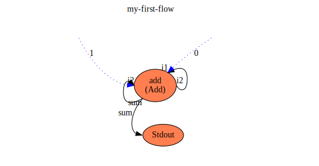

Welcome!
Welcome to flow, a system for defining and running parallel,
dataflow programs like this one:

Page through this guide using the '>' and '<' buttons on the side of the page or navigating directly to a section using the Table of Contents on the left.
The top-level sections are:
- Introduction to Flow
- Your First Flow
- Defining flows
- Running flows
- The
flowrrunner - Debugging Flows
- The Flow Standard Library
- Sample flows
- Developing Flow
- Internals of the Flow Project
What is 'flow'
flow is a system for defining and running inherently parallel, data-dependency-driven 'programs'.
Wikipedia defines dataflow programs as
"dataflow programming is a programming paradigm that models a program as a directed
graph of the data flowing between operations"
which pretty much sums it up.
A flow program is created by defining a directed graph of processes that process data and that are
connected by connections.
A process can have zero or more inputs and produces zero or one output. They have no side-effects.
There is no shared-memory.
In flow a process is a generic term. A process can be a function that directly implements the
processing on data, or it can be a nested "sub-flow".
i.e. Another flow definition, that in turn may contains functions and/or other sub-flows.
When we wish to refer to them indistinctly, we will use the term process process. When distinctions
need to be made we will use function, flow or sub-flow.
Thus, a flow is an organization object, used to hierarchically organize sub-flows and functions,
and functions are what actually get work done on data.
Flows can be nested infinitely, but eventually end in functions. Functions consist of a definition
(for the compiler and the human programmer) and an implementation (for the runtime to use to process data).
The connections between processes are explicit declarations of data dependencies between them.
i.e. what data is required for a process to be able to run, and what output it produces.
Thus a flow is inherently parallel, without any further need to express the parallelism of the described
algorithm.
As part of describing the connections, I would like flow to be also visual, making the data
dependencies visible and directly visually "author-able", but this is still a work in progress and a
declarative text format for flow definitions was a step on the way and what is currently used.
Functions and sub-flows are interchangeable and nestable, so that higher level programs can be
constructed by combining functions and nested flows, making flows reusable.
I don't consider flow a "programming language", as the functionality of the program is created from the combination of functions, that can be very fine grained and implemented in many programming languages (or even assembly, WebAssembly or something else).
Program logic (control flow, loops) emerges from how the processes are "wired together" in 'flows'.
I have chosen to implement the functions included with flow (in the flowstdlib standard
library and the context functions of the flowr flow runner) in in rust, but they could be in other
languages.
I don't consider flow (or the flow description format) a DSL. The file format is chosen for describing
a flow in text. The file format is not important, providing it can describe the flow (processes and
connections).
I chose TOML as there was good library support for parsing it in rust and it's a bit easier on the eyes than writing JSON. I later implemented multiple deserializers, so the flow description can be in other formats (including json and yaml) and even to be able to mix and combine descriptions in multiple formats.
Q. Is it high-level or low-level?
A. "Well...yes".
The level of granularity chosen for the implementation of functions that flows are built from is arbitrary.
A function could be as simple as adding two numbers, or it could implement a complex algorithm.
Interchangeability of functions and sub-flows as processes
A number of simple primitive functions can be combined together into a flow which appears as a complex
process to the user, or it could be a complex funtion that implements the entire algorithm in code in
a single function.
The users of the process should not need to know how it is implemented. They see the process definition of it's inputs and outputs, a description of the processing it performs, and use it indistinctly.
Fundamental tenets of 'flow'?
The 'tenets', or fundamental design principles, of flow that I have strived to meet include:
No Global or shared memory
The only data within flow is that flowing on the connections between processes. There is no way to
store global state, share variables between functions nor persist data across multiple function invocations.
Pure Functions
Functions have no side-effects (except context functions which I'll describe later). Jobs for functions
are created with a set of inputs and they produce an output, and the output should only depend on the input,
along the lines of "pure" functions in Functional Programming. Thus a function should be able to be
invoked multiple times and always produce the same output. Also, functions can be executed by different
threads, processes, machines and machines architectures and always produce the same output.
This helps make flow execution predictable, but also parallelizable. Functions can be ran in parallel or interleaved without any dependency on the other functions that may have ran before, those running at the same time, or those in the future - beyond their input values.
This can enable novel tracing and debugging features also such as "time travel" (going backwards in a program) or "un-executing" a function (stepping backwards).
Encapsulation
The complexity of a process is hidden inside it's definition and you don't need to know it's implementation to know how to use it.
- Public specification of a
process: inputs and outputs for the compiler and user and a text description of what processing it performs on its inputs and what output(s) it produces, for the human programmer. - Private implementation. A
processimplementation can be afunctionimplemented in code or an entire sub-flow containing many sub-layers and eventually functions.
A process's implementation should be able to be changed, and changed from a function to a sub-flow or vice versa without affecting flow programs that use it.
Re-usability
Enabled by encapsulation. A well defined process can be used in many other flows via references to it. Facilitate the "packing" of processes (be they functions or sub-flows) for re-use by others in other flows.
Portability
The intention is that the run-time can run on many platforms. The libraries have been written to be able to compile to WASM and be portable across machines and machine architectures.
The function implementations in libraries are compiled to native for performance but also to WASM for portability. Function implementations provided by the user as part of a flow are compiled to WASM once, then distributed with the flow and run by any of the run-times, making the flow portable without re-compilation.
Polyglot
Although the compiler and runtimes are written in one language (rust), others versions could be written in other languages, there should be nothing in flow semantics or flow definition specific to one language.
Process implementations supplied with a flow could be written in any language that can compile to WASM, so it can then be distributed with the flow and then loaded and run by any run-time implementation.
Functional Decomposition
Enable a problem to be decomposed into a number of communicating processes, and those in turn can be decomposed and so on down in a hierarchy of processes until functions are used. Thus the implementation is composed of a number of processes, some of which maybe reused from elsewhere and some specific to the problem being solved.
Structured Data
Data that flows between processes can be defined at a high-level, but consist of a complex structure or multiple levels of arrays of data, and processes and sub-processes can select sub-elements as input for their processing.
Inherently Parallel
By making data dependencies between processes the basis of the definition of a flow, the non-parallel aspects of a flow (when one process depends on data from a previous process) are explicit, leading to the ability to execute all processes that can execute (due to the availability of data for them to operate on) at any time, in parallel with other executions of other processes, or of other instances of the same process.
The level of concurrency in a flow program depends only on the data structures used and the connections between the processes that operate on them. Then the level of parallelism exploited in its execution depends on the resources available to the flow runner program running the flow.
Distributable
As the functions are pure, and only depend on their inputs, they maybe executed across threads, cores, processes, machines and (via portability and WASM) even a heterogeneous network of machines of different CPU architectures and operating systems.
Separate the program from the context
There is an explicit separation between the flow program itself, and the environment in which it runs.
Flows contain only pure functions, but they are run by a "flow runner" program (such as flowr) that
provides "impure" context functions for interacting with the context in which it is runs, for things
like STDIO, File System, etc.
Efficiency
When there is no data to process, no processes are running and the flow and the flow runner program running it are idle.
Project Components and Structure
Here is a summary of the project components, their purpose and a link to their README.md:
- flowcore - A set of core structs and traits used by
flowrandflowcplus code to fetch content from file/http and resolve library (lib://) references. - flowmacro - A macro used to help write function implementation code that compile natively and to wasm
- flowc - The
flowcflow compiler binary is a CLI built aroundflowclibthat takes a number of command line arguments and source files or URLs and compiles the flow or library referenced.flowclibis the library for compiling flow program and library definitions from toml files, producing generated output projects that can be run byflowr.
- flowrlib - The flow runner library that loads and executes compiled flows.
- flowr - The
flowrflow runner binary that can be used to run and debug - flows compiled with a flow compiler such as
flowc. - flowstdlib - the flow "standard library" which contains a set of functions that can be used by flows being defined by the user
- samples - A set of sample flows
The Inspirations for 'flow'
I have had many sources of inspiration in this area over the past three decades.
Without realizing it they started to coalesce in my head and seemingly unrelated ideas from very different areas started to come together to form what I eventually called 'flow' and I started to work on it.
The impetus to actually implement something, instead of just thinking about it, came when I was looking for some "serious", more complex, project in order to learn rust (and later adding WebAssembly to the mix).
It should be noted, that this project was undertaken in a very "personal" (i.e. idiosyncratic) way, without any formal background in the area of functional programming, data flow programming, communicating serial processes or similar. When starting it, I wanted to see if any of my intuitions and ideas could work, ignoring previous efforts or established knowledge and previous projects. I didn't want to get "sucked in" to just re-implementing someone else's ideas.
I have done quite a bit of reading of paper on these areas after getting a reasonable version of flow working
and saw I was repeating a number of existing ideas and techniques..no surprise!
Specific inspirations from my career
I have worked with these technologies listed below over the decares (from University until now) and they all added something to the idea for flow in my head.
- The Inmos transputer chip and its
Occam parallel programming
language (which I studied at University in the '80's), without realizing that this was based on Hoare's CSP.
- Parallel programming language (although not based on data dependencies)
- Parallel hardware 8and software processes) that communicated by sending messages over connections (some virtual in software, others over hardware between chips)
- Structured Analysis and Design from
my work with it in HP the '80s!
- Hierarchical functional decomposition
- Encapsulation
- Separation of Program from Context
- UNIX pipes
- Separate processes, each responsible for limited functionality, communicating in a pipeline via messages (text)
- Trace scheduling for compiler instruction scheduling based on data
dependencies between instructions (operations) work done at MultiFlow and
later HP by Josh Fisher, Paolo Faraboschi and others.
- Exploiting inherent parallelism by identifying data dependencies between operations
- Amoeba distributed OS by Andrew Tannenbaum that made a
collaborating network of computers appear as one to the user of a "Workstation"
- Distribution of tasks not requiring "IO", abstraction of what a machine is and how a computer program can run
- Yahoo! Pipes system for building "Web Mashups"
- Visual assembly of a complex program from simpler process by connecting them together with data flows
Non-Inspirations
There are a number of things that you might suspect were part of my set of inspirations for creating 'flow', or maybe you think I even copied the idea from them, but that in fact (you'll have to trust me on this one) is not true.
I didn't study Computer Science, and if I had I may well have been exposed to some of these subjects a long-time ago. That would probably have saved me a lot of time.
But, then I would have been implementing someone else's ideas and not (what I thought were) my own. Think of all the satisfaction I would have lost out on while re-inventing thirty to forty year-old ideas!
While implementing the first steps of 'flow' I started to see some materials come up in my Internet searches, that looked like they could be part of a theory of the things I was struggling with. The Main one would be Hoare's 1976 paper on the "Theory of Communicating Sequential Processes" (or CSP for short).
It turns out some of that based work was the basis for some of my inspirations (e.g. Inmos Transputer and Occam language), unbeknownst to me.
But I decided to deliberately ignore them as I worked out my first thoughts, did the initial implementation and got some simple examples up and running!
Later, I looped back and read some papers, and confirmed most of my conjectures.
I got a bit bored with the algebra approach to it (and related papers) though and didn't read or learn too much.
One Hoare paper refers more to a practical implementation, and does hit on a number of the very subjects I was struggling with, such as the buffering (or not) of data on "data flows" between functions (or processes in his terms).
Once I progress some more, I will probably go back and read more of these papers and books and find solutions to the problems I have struggled to work out on my own - but part of the purpose of this project for me is the intellectual challenge to work them out for myself, as best as I can.
Parallelism
Using flow algorithms can be defined that exploit multiple types of parallelism:
- Data Parallelism
- Pipelining
- Divide and Conquer
Data Parallelism
Also known as "Single Program Multiple Data".
In this case the data is such that it can be segmented and worked on in parallel, using the same basic algorithm for each chunk of data.
An example would be some image processing or image generation task, such as generating the mandlebrot set
(see the mandlebrot example in flowsamples).
The two-dimensional space is broken up into a 2D Array of pixels or points, and then they are streamed through a function or sub-flow that does some processing or calculation, producing a new 2D Array of output values.
Due to the data-independence between them, all of them can be calculated/processed in parallel, across many threads or even machines, exploiting the inherent parallelism of this "embarrassingly parallel" algorithm.
They need to be combined in some way to produce the meaningful output. This could be using an additional sub-flow to combine them (e.g. produce an average intensity or color of an image), that is not parallel, or it could be to render them as an image for the user.
In the case of producing a file or image for the user, functions can be used for that from
the flow runner's context functions leaving the flow itself totally parallel.
In a normal procedural language, an image would be rendered in memory in a 2D block of pixels and then written out to file sequentially so that the pixels are placed in the correct order/location in the file.
In a flow program, that could be gone, although accumulating the 2D array in memory may represent a bottleneck.
flowr's image buffer context function is written such that it can
accept pixels in any random order and render them correctly, but having the following inputs:
### Inputs
* `pixel` - the (x, y) coordinate of the pixel
* `value` - the (r, g, b) triplet to write to the pixel
* `size` - the (width, height) of the image buffer
* `filename` - the file name to persist the buffer to
Map Reduce
Map-Reduce is done similar to above, using a more complex initial step to form independent data "chunks" ("Mapping") that can be processed totally in parallel, and a combining phase ("Reducing) to produce the final output.
Pipelining
A flow program to implement pipeline processing of data is trivial and there is a
pipeline example inflowsamples.
A series of processes (they can be functions or subflows) are defined. Input data is connected to flow
to the first, whose output is sent to the second, and so on and the output rendered for the user.
When multiple data values are sent in in short succession (additional values are sent before the first value has propagated out of the output) then multiple of the processes can run in parallel, each one operating on a different data value, as there is no data or processing dependency between the data values.
If there are enough values (per unit time) to demand it, multiple instances of the same processes can be used to increase parallelism, doing the same operation multiple times in parallel on different data values.
Divide and Conquer
Just as in procedural programming, a large problem can be broken down into separate pieces and
programmed separately, this can be done with flow.
A complex problem could be broken down into two (say) largely independent sub-problems. Each one can be programmed in different sub-flows, and fed different parts (or copies) of the input data. Then when both produce output they can be combined in some way for the user.
As there is no data dependency between the sub-flow outputs (intermediate values in the grander scheme of things) they can run totally in parallel.
If the two values were just need to be output to the user, then they can each proceed at their own pace (in parallel) and each one output when complete. In this case the order of the values in the output to the user might vary, and appropriate labelling to understand them will be needed.
Depending on how the values need to be combined, or if a strict order in the output is required, then a later ordering or combining step maybe needed. This step will necessarily depends on both sub-flow's output value, thus introducing a data dependency and this final step will operate without parallelism.
Providing the final (non-parallel step) is less compute intensive than the earlier steps, an overall gain can be made by dividing and conquering (and then combining).
Status
The semantics of flows, processes and connections along with the implementation of the flowc compiler, flowr
runner, context functions and the flowstdlib library has allowed for the
creation of a set of example flows that execute as expected.
There has pretty good overall test coverage (> 82%) that allows for safer refactoring.
The docs are reasonably extensive but can always be improved. They probably need "real users" (not the author) to try to use them and flow to make the next round of improvements. There are issues in the repo and the project related to improving docs.
I moved some GUI/IDE experimentation into a separate repo that uses the flowclib and flowrlib libs.
The intention is to re-start some GUI experimentation with egui or iced rust GUI libraries when 1.0
is released.
First flow
Without knowing anything about flow and its detailed semantics you might be able to guess what this flow
below does when executed and what the output to STDOUT will be.
It is a fibonacci series generator.
Understanding the flow
NOTE:You can find a complete description of flow semantics in the next section Defining Flows
Root flow
All flows start with a root "flow definition". Other sub-flows can be nested under the root, via references to separate flow description files, to enable encapsulation and flow reuse.
In this case it is the only one, and no hierarchy of flows descriptions is used or needed. You can see the TOML root flow definition for this flow in the flowsample crate's fibonacci sample. root.toml
Interaction with the execution environment
The root defines what the interaction with the surrounding execution environment is,
such as Stdout, or any other context function provided by the flow runtime
being used (e.g. flowr).
The only interaction with the execution environment in this example is the use of stdout to print the numbers
in the series to the Terminal.
Functions
Functions are stateless, and pure, and just take a set of inputs (one on each of its inputs) and produce an output.
When all the inputs of a function have a value, then the function can run and produce an output, or not
produce outputs, as in the case of the impure stdout function.
This flow uses two functions (shown as orange ovals):
stdoutfrom thecontext functionsas described abovestdoutonly has one, unnamed, default input and no outputs. It will print the value on STDOUT of the process running the flow runner (flowr) that is executing the flow.
- the
addfunction from the flow standard libraryflowstdlibto add two integers together.addhas two inputs "i1" and "i2" and produces the sum of them on the only, unnamed, "default" output.
Connections
Connections (the solid lines) take the output of a function when it has ran, and send it to the input of connected functions. They can optionally have a name.
When a functions has ran, the input values used are made available again at the output.
In this case the following three connections exist:
- "i2" input value is connected back to the "i1" input.
- the output of "add" (the sum of "i1" and "i2") is connected back to the "i2" inputs. This connection has optionally been called "sum"
- the output of "add" (the sum of "i1" and "i2") is connected to the default input of "Stdout". This connection has optionally been called "sum"
Initializations
Inputs of processes (flows or functions) can be initialized with a value "Once" (at startup) or "Always" (each time it ran) using input initializers (dotted lines)
In this example two input initializers are used to setup the series calculation
- "Once" initializer with value "1" in the "i2" input of "add"
- "Once" initializer with value "0" in the "i1" input of "add"
Running the flow
This flow exists as a sample in the flowsamples/fibonacci folder. See the
root.toml root flow definition file
You can run this flow and observe its output from the terminal, while in the flow project root folder:
> cargo run -p flowc -- -C flowr/src/cli flowsamples/fibonacci
flowc will compile the flow definition from the root flow definition file (root.toml) using the context functions
offered by flowr (defined in the flowr/src/cli folder) to generate a manifest.json compiled flow manifest in the
flowsamples/fibonacci folder.
flowc then runs flowr to execute the flow.
flowr is a Command Line flow runner and provides implementations for context functions to read and write to stdio (e.g. stdout).
The flow will produce a fibonacci series printed to Stdout on the terminal.
> cargo run -p flowc -- -C flowr/src/cli flowsamples/fibonacci
Compiling flowstdlib v0.6.0 (/Users/andrew/workspace/flow/flowstdlib)
Finished dev [unoptimized + debuginfo] target(s) in 1.75s
Running `target/debug/flowc flowsamples/first`
1
2
3
5
8
...... lines deleted ......
2880067194370816120
4660046610375530309
7540113804746346429
Step-by-Step
Here we walk you through the execution of the previous "my first flow" (the fibonacci series sample).
Compiled flows consist of only functions, so flow execution consists of executing functions, or more precisely, jobs formed from a set of inputs, and a reference to the function implementation.
Init
The flow manifest (which contains a list of Functions and their output connections) is loaded.
Any function input that has an input initializer on it, is initialized with the value provided in the initializer.
Any function that has either no inputs (only context funcitons are allowed to have no inputs, such as Stdin) or
has a value on all of its inputs, is set to the ready state.
Execution Loop
The next function that is in the ready state (has all its input values available, and is not blocked from sending its output by other functions) has a job created from its input values and the job is dispatched to be run.
Executors wait for jobs to run, run them and then return the result, that may or may not contain an output value.
Any output value is sent to all functions connected to the output of the function that the job ran for. Sending an input value to a function may make that function ready to run.
The above is repeated until there are no more functions in the ready state, then execution has terminated and the flow ends.
Specific Sequence for this example
Below is a description of what happens in the flor runtime to execute the flow.
You can see log output (printed to STDOUT and mixed with the number series output) of what is happening using
the -v, verbosity <Verbosity Level> command line option to flowr.
- Values accepted (from less to more output verbosity) are:
error(the default),warn,infodebugandtrace.
Init:
- The "i2" input of the "add" function is initialized with the value 1
- The "ii" input of the "add" function is initialized with the value 0
- The "add" function has a value on all of its inputs, so it is set to the ready state
- STDOUT does not have an input value available so it is not "ready"
Loop Starts
Ready = ["add"]
- "add" runs with Inputs = (0, 1) and produces output 1
- value 1 from output of "add" is sent to input "i2" of "add"
- "add" only has a value on one input, so is NOT ready
- value 1 from output of "add" is sent to default (only) input of "Stdout"
- "Stdout" has a value on all of its (one) inputs and so is marked "ready"
- input value "i2" (1) of the executed job is sent to input "i1" of "add"
- "add" now has a value on both its inputs and is marked "ready"
- value 1 from output of "add" is sent to input "i2" of "add"
Ready = ["Stdout", "add"]
- "Stdout" runs with Inputs = (1) and produces no output
- "Stdout" converts the
numbervalue to aStringand prints "1" on the STDOUT of the terminal - "Stdout" no longer has values on its inputs and is set to not ready
- "Stdout" converts the
Ready = ["add"]
- "add" runs with Inputs = (1, 1) and produces output 2
- value 2 from output of "add" is sent to input "i2" of "add"
- "add" only has a value on one input, so is NOT ready
- value 2 from output of "add" is sent to default (only) input of "Stdout"
- "Stdout" has a value on all of its (one) inputs and so is marked "ready"
- input value "i2" (1) of the executed job is sent to input "i1" of "add"
- "add" now has a value on both its inputs and is marked "ready"
- value 2 from output of "add" is sent to input "i2" of "add"
Ready = ["Stdout", "add"]
- "Stdout" runs with Inputs = (2) and produces no output
- "Stdout" converts the
numbervalue to aStringand prints "2" on the STDOUT of the terminal - "Stdout" no longer has values on its inputs and is set to not ready
- "Stdout" converts the
Ready = ["add"]
The above sequence proceeds, until eventually:
addfunction detects a numeric overflow in the add operation and outputs no value.- No value is fed back to the "i1" input of add
- "add" only has a value on one input, so is NOT ready
- No value is sent to the input of "Stdout"
- "Stdout" no longer has values on its inputs and is set to not ready
- No value is fed back to the "i1" input of add
Ready = []
No function is ready to run, so flow execution ends.
Resulting in a fibonacci series being output to Stdout
1
2
3
5
8
...... lines deleted ......
2880067194370816120
4660046610375530309
7540113804746346429
Debugging your first flow
Command line options to flowc
When running flowc using cargo run -p flowc you should add -- to mark the end of the options passed to cargo,
and the start of the options passed to flowc
You can see what they are using --help producing output similar to this:
cargo run -p flowc -- --help
Finished dev [unoptimized + debuginfo] target(s) in 0.12s
Running 'target/debug/flowc --help'
flowc 0.8.8
USAGE:
flowc [FLAGS] [OPTIONS] [--] [ARGS]
FLAGS:
-d, --dump Dump the flow to .dump files after loading it
-z, --graphs Create .dot files for graph generation
-h, --help Prints help information
-l, --lib Compile a flow library
-p, --provided Provided function implementations should NOT be compiled from source
-s, --skip Skip execution of flow
-g, --symbols Generate debug symbols (like process names and full routes)
-V, --version Prints version information
OPTIONS:
-L, --libdir <LIB_DIR|BASE_URL>... Add a directory or base Url to the Library Search path
-o, --output <OUTPUT_DIR> Specify the output directory for generated manifest
-i, --stdin <STDIN_FILENAME> Read STDIN from the named file
-v, --verbosity <VERBOSITY_LEVEL> Set verbosity level for output (trace, debug, info, warn, error (default))
ARGS:
<FLOW> the name of the 'flow' definition file to compile
<flow_args>... Arguments that will get passed onto the flow if it is executed
Command line options to flowr
By default flowc uses flowr to run the flow once it has compiled it. Also it defaults to passing the -n/--native
flag to flowr so that flows are executed using the native implementations of library functions.
In order to pass command line options on to flowr you separate them from the options to flowc after another -- separator.
flowr accepts the same -v/--verbosity verbosity options as flowc.
Getting debug output
If you want to follow what the run-time is doing in more detail, you can increase the verbosity level (default level is ERROR)
using the -v/--verbosity option.
So, if you want to walk through each and every step of the flow's execution, similar to the previous step by step section
then you can do so by using -v debug and piping the output to more (as there is a lot of output!):
cargo run -p flowc -- samples/fibonacci -- -v debug| more
which should produce output similar to this:
INFO - 'flowr' version 0.8.8
INFO - 'flowrlib' version 0.8.8
DEBUG - Loading library 'context' from 'native'
INFO - Library 'context' loaded.
DEBUG - Loading library 'flowstdlib' from 'native'
INFO - Library 'flowstdlib' loaded.
INFO - Starting 4 executor threads
DEBUG - Loading flow manifest from 'file:///Users/andrew/workspace/flow/flowsamples/fibonacci/manifest.json'
DEBUG - Loading libraries used by the flow
DEBUG - Resolving implementations
DEBUG - Setup 'FLOW_ARGS' with values = '["my-first-flow"]'
INFO - Maximum jobs dispatched in parallel limited to 8
DEBUG - Resetting stats and initializing all functions
DEBUG - Init: Initializing Function #0 '' in Flow #0
DEBUG - Input initialized with 'Number(0)'
DEBUG - Input initialized with 'Number(1)'
DEBUG - Init: Initializing Function #1 '' in Flow #0
DEBUG - Init: Creating any initial block entries that are needed
DEBUG - Init: Readying initial functions: inputs full and not blocked on output
DEBUG - Function #0 not blocked on output, so added to 'Ready' list
DEBUG - =========================== Starting flow execution =============================
DEBUG - Job #0:-------Creating for Function #0 '' ---------------------------
DEBUG - Job #0: Inputs: [[Number(0)], [Number(1)]]
DEBUG - Job #0: Sent for execution
DEBUG - Job #0: Outputs '{"i1":0,"i2":1,"sum":1}'
DEBUG - Function #0 sending '1' via output route '/sum' to Self:1
DEBUG - Function #0 sending '1' via output route '/sum' to Function #1:0
DEBUG - Function #1 not blocked on output, so added to 'Ready' list
DEBUG - Function #0 sending '1' via output route '/i2' to Self:0
DEBUG - Function #0, inputs full, but blocked on output. Added to blocked list
DEBUG - Job #1:-------Creating for Function #1 '' ---------------------------
DEBUG - Job #1: Inputs: [[Number(1)]]
DEBUG - Function #0 removed from 'blocked' list
DEBUG - Function #0 has inputs ready, so added to 'ready' list
DEBUG - Job #1: Sent for execution
DEBUG - Job #2:-------Creating for Function #0 '' ---------------------------
DEBUG - Job #2: Inputs: [[Number(1)], [Number(1)]]
1
DEBUG - Job #2: Sent for execution
DEBUG - Job #2: Outputs '{"i1":1,"i2":1,"sum":2}'
DEBUG - Function #0 sending '2' via output route '/sum' to Self:1
DEBUG - Function #0 sending '2' via output route '/sum' to Function #1:0
DEBUG - Function #1 not blocked on output, so added to 'Ready' list
DEBUG - Function #0 sending '1' via output route '/i2' to Self:0
DEBUG - Function #0, inputs full, but blocked on output. Added to blocked list
Guide to Defining Flows
In this guide to defining flows, we will describe the syntax of definitions files, but also the run-time semantics of flows, functions, jobs, inputs etc in order to understand how a flow will run when defined.
A flow is a static hierarchical grouping of functions that produce and consume data, connected via connections into a graph.
Root Flow
All flows have a root flow definition file.
The root flow can reference functions provided by the "flow runner" application that will execute the flow,
for the purpose of interacting with the surrounding environment (such as file IO, standard IO, etc).
These are the context functions.
The root flow (as any sub-flow can) may include references to sub-flows and functions, joined by connections between their inputs and outputs, and so on down in a hierarchy.
The root flow cannot have any input or output. As such, all data flows start or end in the root flow. What you
might consider "outputs", such as printing to standard output, is done by describing a connection to a context functions that interacts with the environment.
Flows in General
Any flow can contain references to functions it uses, plus zero or more references to nested flows via Process References, and so on down.
Data flows internally between sub-flows and functions (collectively known as "processes"), as defined by the connections.
All computation is done by functions. A flow is just a hierarchical organization method that allows to group and abstract groups of functions (and sub-flows) into higher level concepts. All data that flows originates in a function and terminates in a function.
flow and sub-flow nesting is just an organizational technique to facilitate encapsulation and re-use of functionality, and does not affect program semantics.
Whether a certain process in a flow is implemented by one more complex function - or by a sub-flow combining multiple, simpler, functions - should not affect the program semantics.
Valid Elements of a flow definition
Valid entries in a flow definition include:
flow- A String naming this flow (obligatory)docs- An optional name of an associated markdown file that documents the flowversion- A SemVer compatible version number for this flow (Optional)authors- Array of Strings of names and emails of authors of the flow (Optional)input|output- 0 or more input/outputs of this flow made available to any parent including it (Note: that the root flow may not contain any inputs or outputs). See IOs for more details.process- 0 or more references to sub-processes to include under the current flow. A sub-process can be anotherflowor afunction. See Process References for more details.connection- 0 or more connections between io of sub-processes and/orioof this flow. See Connections for more details.
Complete Feature List
The complete list of features that can be used in the description of flows is:
- Flow definitions
- Named inputs and outputs (except root flow which has no parent)
- References to sub-processes to use them in the flow via connections
- Functions
- Provided functions
- Library functions
- Context functions
- Sub-flows
- Arbitrarily from the file system or the web
- From a library
- Initializers for sub-process inputs and the flow outputs
Onceinitializers that initialize the input/output with a value just once at the start of flow executionAlwaysinitializers that initialize the input/output every time it is emptied by the creation of a job that takes the value.
- Use of aliases to refer to sub-process with different names inside a flow, facilitating the use of the same function or flow multiple times for different purposes within the sub-flow
- Functions
- Connections between outputs and inputs within a flow
- Connections can be formed between inputs to flow or outputs of one process (function or flow) and outputs of the flow or inputs of a process
- Multiple connections from a source
- Multiple connections to a destination
- Connection to/from a default input/output by just referencing the process in the connection
- Destructuring of output struct in a connection to just connect a sub-part o fit
- Optional naming of a connection to facilitate debugging
- Function definitions
- With just inputs
- With just outputs
- With inputs and outputs
- default single input/output, named single input/output, named multiple inputs/outputs
- author and versioning meta-data and references to the implementation
- Libraries of processes (functions and flows) can be built and described, and referenced in flows
Name
A string used to identify an element.
IO
IOs produce or consume data of a specific type, and are where data enters/leaves a flow or function (more generally referred to as "processes").
name- used to identify an input or output in connections to/from ittype(optional) - An optional Data type for this IO
Default inputs and outputs
If a function only has one input or one output, then naming that input/output is optional. If not named, it is referred to as the default input. Connections may connect data to/from this input/output just by referencing the function.
Generic Inputs or Outputs
If an input or output has no specific Data type specified, then it is considered generic and can
take inputs of any type. What the function does, or what outputs it produces, may vary depending on the input
type at runtime and should be specified by the implementor of the function and understood by the flow programmer
using it.
Example: A print function could accept any type and print out some human readable representation of all of them.
Example: An add function could be overloaded and if provided two numbers it would sum them, but if provided
two strings it could concatenate them.
Process Reference
Flows may reference a another flow or a function (generically referred to as a process) which is defined in a
separate definition file. These are "process references"
Process Reference Fields
source- A Url (or relative path) of a file/resource where the process is defined.
For example, here we reference a process called stdout (see context functions)
[[process]]
source = "context://stdio/stdout"
This effectively brings the function into scope with the name stdout and it can then be used in connections
as a source or destination of data.
Alias for a Process Reference
alias- an alias to use to refer to a process in this flow.- This can be different from the
namedefined by the process itself - This can be used to create two or more instances of a process in a flow, and the ability to refer to them separately and distinguish them in connections.
- This can be different from the
For example, here the process called stdout is aliased as printand then can be referred to using printin
connections.
[[process]]
alias = "print"
source = "context://stdio/stdout"
Source Url formats
The following formats for the source Url are available:
- No "scheme" in the URI -->
file:is assumed. If the path starts with/then an absolute path is used. If the path does not start with/then the path is assumed to be relative to the location of the file referring to it. file:scheme --> look for process definition file on the local file systemhttp:orhttps:scheme --> look for process definition file on a the weblib:--> look for process in a Library that is loaded by the runtime. See flow libraries for more details on how this Url is used to find the process definition file provided by the library.context:--> a reference to a function in the context, provided by the runner application. See context functions for more details on how the process definition file is used.
File source
This is the case when no scheme or the file:// scheme is used in the source Url.
The process definition file is in the same file system as the file referencing it.
- in the flow's directories, using relative file paths
- e.g.
source = "my_function" - e.g.
source = "my_flow" - e.g.
source = "subdir/my_other_function" - e.g.
source = "subdir/my_other_process"
- e.g.
- in a different flow's directories, using relative file paths
- e.g.
source = "../other_flow/other_function" - e.g.
source = "../other_flow/other_flow"
- e.g.
- elsewhere in the local file system, using absolute paths
- e.g.
source = "/root/other_directory/other_function" - e.g.
source = "/root/other_directory/other_flow"
- e.g.
Web Source
When the http or https Url scheme is used for source the process definition file is loaded via http request
to the specified location.
- e.g.
source = "http://my_flow_server.com/folder/function" - e.g.
source = "https://my_secure_flow_server.com/folder/flow"
Initializing an input in a reference
Inputs of a referenced process may be initialized, in one of two ways:
once- the value is inserted into the input just once on startup and there after it will remain empty if a value is not sent to it from a Process.always- the value will be inserted into the input each time after the process runs.
Example, initializing the add function's i1 and ì2 inputs to 0 and 1 respectively, just once at the start
of the flow's execution.
[[process]]
source = "lib://flowstdlib/math/add"
input.i1 = { once = 0 }
input.i2 = { once = 1 }
Example, initializing the add function's i1 input to 1 every time it runs. The other input is free to be
used in connections and this effectively makes this an "increment" function that adds one to any value sent to it
on the i2 input.
[[process]]
source = "lib://flowstdlib/math/add"
input.i1 = { always = 1 }
Initializing the default input
When a process only has one input, and it is not named, then you can refer to it by the name default for the
purposes of specifying an initializer
Example, initializing the sole input of stdout context function with the string "Hello World" just once at
the start of flow execution:
[[process]]
source = "context://stdio/stdout"
input.default = {once = "Hello World!"}
Function Definitions
A function is defined in a definition file that should be alongside the function's implementation files (see later)
Function Definition Fields
function- Declares this files is defining a function and defines the name of the function. This is required to link the definition with the implementation and allow the flow compiler to be able to find the implementation of the function and to include it in the generated project.namemust match exactly the name of the object implemented.source- the file name of the file implementing the function, relative to the location of the definition filedocs- a markdown file documenting the function, relative to the location of the definition fileinput- zero (for impure)|one (for pure) or more inputs (as per IO)output- zero (for impure)|one (for pure) or more outputs (as per IO)impure- optional field to define an impure function
Types of Function Definitions
Functions may reside in one of three locations:
- A
context functionprovided by a flow running applications, as part of a set of functions it provides to flows to allow them to interact with the environment, user etc. E.g.readlineto read a line of text from STDIN. - A
library functionprovided by a flow library, that a flow can reference and then use to help define the overall flow functionality. E.g.addfrom theflowstdliblibrary to add two numbers together. - A
provided functionwhere the function's definition and implementation are provided within the flow hierarchy. As such they cannot be easily re-used by other flows.
Impure (or context) functions
An impure function is a a function that has just a source of data (e.g. stdin that interacts with the execution
environment to get the data and then outputs it) or just a sink of data (e.g. stdout that takes
an input and passes it to the execution environment and produces no output in the flow).
The output of an impure function is not deterministic based just on the inputs provided to it but depends on the system or the user using it. It may have side-effects on the system, such as outputting a string or modifying a file.
In flow these are referred to as context functionsbecause they interact with (and are provided by) the
execution context where the flow is run. For more details see context functions
Impure functions should only be defined as part of a set of context functions, not as a function in a
library nor as a provided function within a flow.
Impure functions should declare themselves impure in their definition file using the optional impure field.
Example, the stdin context function declares itself impure
function = "stdin"
source = "stdin.rs"
docs = "stdin.md"
impure = true
...
Pure functions
Functions that are used within a flow (whether provided by the flow itself or from a library) must be pure
(not depend on input other than the provided input values nor have no side-effects in the system) and have
at least one input and one output.
- If they had no input, there would be no way to send data to it and it would be useless
- If it had no output, then it would not be able to send data to other functions and would also be useless
Thus, such a pure function can be run anytime, anywhere, with the same input and it will produce the same
output.
Function execution
Functions are made available to run when a set of inputs is available on all of its inputs. Then a job is created containing one set of input values (a value taken from each of it's inputs) and sent for execution. Execution may produce an output value, which using the connections defined, will be passed on to the connected input of one or more other functions in the function graph. That in turn may cause that other function to run and so on and so forth, until no function can be found available to run.
Default inputs and outputs
If a function only has one input or one output, then naming that input/output is optional. If not named, it is referred to as the default input. Connections may connect data to/from this input/output just by referencing the function.
Types
By default flow supports JSON types:
nullbooleanobjectarraynumberstring
Connection
Connections connect a source of data (via an IO Reference) to a sink of data (via an IO Reference) of a compatible type within a flow.
name(Optional) - an Optional name for the flow. This can be used to help in debugging flowsfrom= IO Reference to the data source that this connection comes fromto= IO Reference to a data sink that this connection goes to
Connections at multiple level in flow hierarchy
A flow is a hierarchy from the root flow down, including functions and sub-flows (collectively sub-processes).
Connections are defined within each flow or sub-flow from a source to a destination.
Within a flow sources include:
- an input of this flow
- an output from one of the sub-processes
and destinations include
- an input of one of the sub-processes
- an output of this flow
A connection may be defined with multiple destinations and/or there maybe multiple connections a one source or to a destination.
Connection "branching"
Within a sub-flow there may exist a connection to one of it's outputs, as a destination. At the next level up in the flow hierarchy that sub-flow output becomes a possible source for connections defined at that level.
Thus a single connection originating at a single source in the sub-flow may "branch" into multiple connections, reaching multiple destinations.
Connection feedback
It is possible to make a connection from a process's output back to one of its inputs. This is useful for looping, recursion, accumulation etc as described later in programming methods
Connection from input values
The input values used in an execution are made available at the output alongside the output value calculated, when completes execution. Thus a connection can be formed from this input value and the value is sent via connections when the function completes, similar to the output value. It is also possible to feedback this input value back to the same or different input for use in recursion. An example of this can be seen in the fibonacci example flow definition.
# Loop back the input value #2 from this calculation, to be the input to input #1 on the next iteration
[[connection]]
from = "add/i2"
to = "add/i1"
Connection Gathering and Collapsing
When a flow is compiled, sources of data (function outputs) are followed through the through layers of sub-flows/super-flow definition of the flow hierarchy and the resulting "tree" of connections to be eventually connected (possibly branching to become multiple connections) to destination(s).
The chain of connections involved in connecting a source to each of the destinations is "collapsed" as part of the compilation process, to leave a single connection from the source to each of the destinations.
Connection Optimizing
Thru flow re-use, come connections may end up not reaching any destination. The compiler optimizes these connections away by dropping them.
If in the process of dropping dead connections a function ends up not having any output and/or input (for "pure functions) it maybe removed, and an error or warning reported by the compiler.
IO References
An IO Reference uniquely identifies an Input/Data-source (flow/function) or an Output/Data-sink in the flow hierarchy.
If any flows or functions defined in other files are referenced with an alias, then it should be used in the IO references to inputs or outputs of that referenced flow/function.
Thus valid IO reference formats to use in connections are:
Data sinks
input/{input_name}(where input is a keyword and thus a sub-flow cannot be namedinputoroutput){sub_process_name}/{output_name}or{sub_process}for the default output
Where sub_process_name is a process referenced in this flow, and maybe a function or a sub-flow.
The reference use the process's name (if the process was not given an alias when referenced) or it's alias.
Data sinks
output/{output_name}(where output is a keyword and thus a sub-flow cannot be namedinputoroutput){sub_process_name}/{input_name}or{sub_process}for the default input
Selecting parts of a connection's value
A connection can select to "connect" only part of the data values passed on the source of the connection. See below Selecting sub-structures of an output for more details.
Run-time Semantics
An input IO can be connected to multiple outputs, via multiple connections.
An output IO can be connected to multiple inputs on other flows or functions via multiple connections.
When the data is produced on the output by a function the data is copied to each destination function using all the connections that exists from that output.
Data can be buffered at each input of a function.
The order of data arrival at a functions input is the order of creation of jobs executed by that function. However, that does not guarantee order of completion of the job.
A function cannot run until data is available on all inputs.
Loops are permitted from an output to an input, and are used as a feature to achieve certain behaviours.
When a function runs it produces a result that can contain an output. The result also contains all the inputs used to produce any output. Thus input values can be reused by connecting from this "output input-value" in connections to other processes, or looped back to an input of the same function.
Example, the fibonacci example uses this to define recursion.
...
# Loop back the input value #2 from this calculation, to be the input to input #1 on the next iteration
[[connection]]
from = "add/i2"
to = "add/i1"
...
Type Match
For a connection to be valid and used in execution of a flow, the data source must be found, the data sink must be found and the two must be of compatible DataTypes.
If those conditions are not met, then a connection will be dropped (with an error message output) and the flow will attempted to be built and executed without it.
By not specifying the data type on intermediary connections thru the flow hierarchy, the flow author can enable connections that are not constrained by the intermediate inputs/outputs used and those types are not need to be known when the flow is being authored. In this case the type check will pass on the intermediate connections to those "generic" inputs our output.
However, once the connection chain is collapsed down to one end-to-end connection, the source and destination types must also pass the type check. This includes intermediate connections that may select part of the value.
Example
- Subflow 1 has a connection: A function
serieswith default output Array/Number --> Generic output of the subflow- The destination of the connection is generic and so the intermediate type check passes
- Root flow (which contains Subflow 1) as a connection: Generic output of the subflow --> Function
addinputi1(which has a data typeNumber) that includes selection of an element of the array of numbers/1- The source is generic, so the intermediate type check passes
- A connection chain is built from the
seriesoutput thru the intermediate connection to theaddfunction inputi1 - The connection chain is collapsed to a connection from the Array element of index 1 of the
seriesfunction's output to theaddfunctions inputi1 - The
fromandtotypes of this collapsed connection are bothNumberand so the type check passes
Runtime type conversion of Compatible Types
The flow runtime library implements some type conversions during flow execution, permitting non-identical types from an output and input to be connected by the compiler, knowing the runtime will handle it.
These are know as compatible types. At the moment the following conversions are implemented but more
maybe added over time:
Matching Types
- Type 'T' --> Type 'T'. No conversion required.
Generics
- Generic type --> any input. This assumes the input will check the type and handle appropriately.
- Array/Generic type --> any input. This assumes the input will check the type and handle appropriately.
- any output --> Generic type. This assumes the input will check the type and handle appropriately.
- any output --> Array/Generic type. This assumes the input will check the type and handle appropriately.
Array Deserialization
- Array/'T' --> 'T'. The runtime will "deserialize" the array and send it's elements one-by-one to the input. NOTE that 'T' maybe any type, including an Array, which is just a special case.
- Array/Array/'T' --> 'T'. The runtime will "deserialize" the array of arrays and send elements one-by-one to the input
Array Wrapping
- 'T' --> Array/'T'. The runtime will take the value and wrap it in an array and send that one-element array to the input. Again, 'T' can be any type, including an Array.
- 'T' --> Array/Array/'T'. The runtime will take the value and wrap it in an array in an array and send that one-element array of arrays to the input.
Default input or output
If a function only has one input or one output, then naming that input/output is optional. If not names it is referred to as the default input. Connections may connect data to/from this input just by referencing the function.
Example, the stdout context function only has one input and it is not named
function = "stdout"
source = "stdout.rs"
docs = "stdout.md"
impure = true
[[input]]
and a connection to it can be defined thus:
[[connection]]
from = "add"
to = "stdout"
Named inputs
If an input is defined with a name, then connections to it should include the function name and the input name to define which input is being used.
Example
[[connection]]
from = "add"
to = "add/i2"
Selecting an output
When a function runs it produces a set of outputs, producing data on zero or more of it's outputs, all at once.
A connection can be formed from an output to another input by specifying the output's route as part of the
IO Reference in the from field of the connection.
Example:
[[connection]]
from = "function_name/output_name"
to = "stdout"
Selecting sub-structures of an output
As described in types, flow supports Json data types. This includes two "container types", namely: "object" (a Map) and "array".
If an output produces an object, a connection can be formed from an entry of the map (not the entire map) to a
destination input. This allows (say) connecting a function that produces a Map of strings to another function
that accepts a string. This is done extending the route used in the IO Reference of the connection with
the output name (to select the output) and the key of the map entry (to select just that map entry).
Example: function called "function" has an output named "output" that produces a Map of strings. One of those Map entries has the key "key". Then the string value associated with that key is used in the connection.
[[connection]]
from = "function/output/key"
to = "stdout"
Similarly, if the output is an array of values, a single element from the array can be specified in the connection
using a numeric subscript.
Example: function called "function" has an output named "output" that produces an array of strings. Then a single string from the array can be sent to a destination input thus:
[[connection]]
from = "function/output/1"
to = "stdout"
If a function runs and produces an output which does not contain the sub-structure selected by a connection, for the purpose of the destination of that connection it is just as if the output was not produced, or the function had not run. Thus, no value will arrive at the destination function and it will not run.
Connecting to multiple destinations
A single output can be connected to multiple destinations by creating multiple connections referencing the output.
But, to make it easier (less typing) to connect an output to multiple destinations the [[connection]] format
permits specifying more than one to = "destination".
Example
[[connection]]
from = "output"
to = ["destination", "destination2"]
Flow Libraries
Libraries can provide functions (definition and implementation) and flows (definition) that can be re-used by other flows.
An example library is the flowstdlib library, but others can be created and shared by developers.
Library structure
A flow library's structure is upto the developer to determine, starting with a src subdirectory, with optional
sub-directories for modules, and sub-modules.
Native crate structure
In order to support native linking of lib, it must be a valid rust crate and so a Cargo.toml file in the source
that references a lib.rs file, that in turn references mod.rs files in sub folder that reference the sources, so
that it is all included into the crate when compiled.
Example
[lib]
name = "flowstdlib"
path = "src/lib.rs"
Parallel WASM crate structure - WASM library build speed-up
Each function (see below) contains it's own Cargo.toml used to compile it to WASM. If left like this, then
each function will re-compile all of the source dependencies, even if many of the dependencies are shared across
all the functions, making the library compile to WASM very slow.
To speed up library builds, a solution ("hack") is used. A cargo workspace is defined in parallel with the Native
crate mentioned above, with it's root workspace Cargo.toml in the {lib_name}/src/
folder. This workspace includes as members references to all the Cargo.toml files of the functions (see below).
Thus when any of them are compiled they share a single target directory and the common dependencies are only
compiled once
Including a flow
Flow definition files may reside at any level. Example, the sequence flow definition
in the math module of the flowstdlib library.
Alongside the flow definition a documentation Markdown file (with .md extension) can be included. It should be
referenced in the flow definition file using the docs field (e.g. docs = "sequence.md").
Including a function
Each function should have a subdirectory named after function ({function_name}), which should include:
Cargo.toml- build file for rust implementations{function_name}.toml- function definition file. It should include these fieldstype = "rust"- type is obligatory and "rust" is the only type currently implementedfunction = "{function_name}"- obligatorysource = "{function_name}.rs"- obligatory and file must exist.docs = "{function_name}.md"- optional documentation file that if referenced must exist
{function_name}.md- if references in function definition file then it will be used (copied to output){function_name}.rs- referenced from function definition file. Must be valid rust and implement required traits
Compiling a library
Flow libraries can be compiled using the flowc flow compiler and its -l, --lib option. This will compiler
and/or copy all required files from the library source directory into a library directory structure (where
can be specified with the -o, --output <OUTPUT_DIR> option). This directory is a self-contained, portable
library. It can be packaged, moved, unpackaged and used elsewhere, providing it can be found by the compiler
and runtime (using FLOW_LIB_PATH env var and -L, --libdir <LIB_DIR|BASE_URL> options) when needed.
The output directory structure will have the same structure as the library source (subdirs for modules) and will include:
manifest.json- Generated Library manifest, in the root of the directory structure*.md- Markdown source files copied into output directory corresponding to source directory*.toml- Flow and Function definition files copied into output directory corresponding to source directory*.wasm- Function WASM implementation compiled from supplied function source and copied into output directory corresponding to source directory*.dot- 'dot' (graphvis) format graph descriptions of any flows in the library source*.dot.svg- flow graphs rendered into SVG files from the corresponding 'dot' files. These can be referenced in doc files
Lib References
References to flows or functions are described in more detail in the process references section. Here we will focus on specifying the source for a process (flow or function) from a library using the "lib://" Url format.
The process reference to refer to a library provided flow or function is of the form:
lib://lib_name/path_to_flow_or_function
Breaking that down:
- "lib://" Url scheme identifies this reference as a reference to a library provided flow or function
- "lib_name" (the hostname of the Url) is the name of the library
- "path_to_flow_or_function" (the path of the Url) is the location withing the library where the flow or function resides.
By not specifying a location (a file with file:// or web resource with http:// or https://) allows the system
to load the actual library with it's definitions and implementation from different places in different flow
installations thus flows that use library functions are portable, providing the library is present and can be found
wherever it is being run.
The flowrlib runtime library accepts a "search path" where it should look for the library (using the library's
name "lib_name" from the Url)
Different flow runners (e.g. flowr or flowrex are included examples here but others can be written) can provide
different ways to provide entries in the search path. Below we describe how flowr and flowrex do this.
Configuring the Library Search Path
The library search path is initialized from the contents of the $FLOW_LIB_PATH environment variable
(if it is defined).
This path maybe augmented by supplying additional directories or URLs to search using one
or more instances of the -L command line option.
Finding the references lib process
The algorithm used to find files via process references is described in more detail in the process references section. An example of how a library function is found is shown below.
A process reference exists in a flow with source = "flowstdlib://math/add"
- Library name =
flowstdlib - Function path within the library =
math/add
All the directories in the search path are searched for a top-level sub-directory that matches the library name.
If a directory matching the library name is found, the path to the process within the library is used to try and find the process definition file.
For example, if FLOW_LIB_PATH environment variable is defined thus:
export FLOW_LIB_PATH=/Users/me/workspace/flow
And the flow references a process thus:
[[process]]
source = "flowstdlib://math/add"
Then the directory /Users/me/workspace/flow/flowstdlib is looked for.
If that directory is found, then the process path within the library stdio/stdin is used to create the full path
to the process definition file is /Users/me/workspace/flow/flowstdlib/math/add.
(refer to the full algorithm in process references)
If the file /Users/me/workspace/flow/flowstdlib/math/add.toml exists then it is parsed and made available to the flow
for use in connections.
Context Functions
Each flow runner application can provide a set of functions (referred to as context functions) to flows for
interacting with the execution environment.
They are identified by a flow defining a process reference that uses the context:// Url scheme.
(see process references for more details).
In order to compile a flow the compiler must be able to find the definition of the function.
In order to execute a flow the flow runner must either have an embedded implementation of the function or know how to load one.
Different runtimes may provide different functions, and thus it is not guaranteed that a function is present at runtime.
Completion of Functions
Normal "pure" functions can be executed any number of times as their output depends only on the inputs and the (unchanging) implementation. They can be run any time a set of inputs is available.
However, a context function may have a natural limit to the number of times it can be ran during the execution of a flow using it. An example would be a function that reads a line of text from a file. It can be ran as many times as there are lines of text in the file, then it will return End-Of-File and a flag to indicate to the flow runtime that it has "completed" should not be invoked again.
If this was not done, as the function has no inputs, it would always be available to run, and be executed indefinitely, just to return EOF each time.
For this reason, each time a function is run, it returns a "run me again" flag that the runtime uses to determine if it has "completed" or not. If it returns true, then the function is put into the "completed" state and it will never be run again (during that flow's execution)
Specifying the Context Root
At compile time the compiled must know which functions are available and their definitions.
Since it is the flow runner that provides the implementations and knows their definitions, it must make these discoverable and parseable by the compiler as a set of function definition files.
This is done by specifying to the flowc compiled what is called the context root or the root folder of
where the targeted runtime's context functions reside.
Context Function Process References
A reference to a context function process (in this case it is always a function) such as STDOUT is of the form:
[[process]]
source = "context://stdio/stdout"
The context:// Url scheme identifies it is a context function and it's definition should be sought below
the Context Root. The rest of the Url specifies the location under the Context Root directory (once found).
Example
The flow project directory structure is used in this example, with flow located at /Users/me/flow and
flow in the users $PATH.
The fibonacci sample flow is thus found in the /Users/me/flow/flowsamples/fibonacci directory.
The flowr flow runner directory is thus at /Users/me/flow/flowr. Within that folder flowr provides a set of
context function definitions for a Command Line Interface (CLI) implementation in the src/cli sub-directory.
If in the root directory of the flow project, using relative paths, the sample flow can be compiled and
run using the -C, --context_root <CONTEXT_DIRECTORY> option to flowc:
> flowc -C flowr/src/cli flowsamples/fibonacci
The flowc compiler sees the "context://stdio/stdout" reference. It has been told that the Context Root is
at flowr/src/cli so it searches for (and finds) a function definition file at flowr/src/cli/stdio/stdout/stdout.toml
using the alrgorithm described in process references.
Provided Functions
As described previously, flows can use provided functions provided by the flow runner app (e.g. flowr)
and by flow libraries.
However, a flow can also provide its own functions (a definition, for the compiler, and an implementation, for the runtime).
The process references section describes the algorithm for finding the function's files (definition and implementation) using relative paths within a flow file hierarchy.
Using relative paths means that flows are "encapsulated" and portable (by location) as they can be moved between directories, files systems and systems/nodes and the relative locations of the provided functions allow them to still be found and the flow compiled and ran.
Examples
The flowsamples crates has two samples that provide functions as part of the flow:
- Reverse Echo in the folder
flowsamples/reverse-echo- a simple sample that provides a function to reverse a string - Mandlebrot in the folder
flowsamples/mandlebrot- provides two functions:pixel_to_pointto do conversions from pixels to points in 2D imaginary coordinates spaceescapesto calculate the value of a point in the mandlebrot set
What a provided function has to provide
In order to provide a function as part of a flow the developer must provide:
Function definition file
Definition of the function in a TOML file.
Example escapes.toml
The same as any other function definition it must define:
function- field to show this is a function definition file and provide the function's namesource- the name of the implementation file (relative path to this file)type- to define what type of implementation is provided ("rust"is the only supported value at this time)input- the function's inputs - as described in IOsoutput- the function's outputs - as described in IOsdocs- Documentation markdown file (relative path)
Example escapes.md
Implementation
Code that implements the function of the type specified by type in the file specified by source.
Example: escapes.rs
This may optionally include tests, that will be compiled and run natively.
Build file
In the case of the rust type (the only type implemented!), a Cargo.toml file that is used to compile
the function's implementation to WASM as a stand-along project.
How are provided function implementations loaded and ran
If the flow running app (using the flowrliblibrary`) is statically linked, how can it load and then run the
provided implementation?
This is done by compiling the provided implementation to WebAssembly, using the provided build file. The .wasm
byte code file is generated when the flow is compiled and then loaded when the flow is loaded by flowrlib
Programming Methods
flow provides the following facilities to help programmers create flows:
Encapsulation
Functionality can be encapsulated within a function at the lowest level by implementing it in code, defining the function via a function definition file with it's inputs and outputs and describing the functionality provided by it in an associated markdown file.
Sets of functions, combined together to provide some defined functionality, can be grouped together and connected in a graph in a flow, described in a flow definition file. This "flows"'s functionality can be defined via it's inputs and outputs just like a function, and its functionality described in an associated markdown file.
Flow definitions in turn can reference and incorporate other flows, alongside functions, until the desired functionality is reached.
Thus functionality is encapsulated via a "process" definition file, where a "process" can be defined as a function or a flow.
The mechanism to reference a process in a flow definition file is common for both types, and in fact the flow does not "know" if the process referenced is implemented as a function or a flow. At a later date the functionality of the sub-process should be able to be changed from being a function to a flow (or vice versa) with no semantic difference and no required change on the program and no impact to its execution result, within the limits of determinism and concurrency.
Concurrency
Jobs, consisting of a set of input values, for execution by a function's implementation are created and dispatched while inputs values are available to form them.
Two jobs for the same function are independent of each other. They maybe dispatched in one order, executed independently by the same or different executor, on the same or different machine, with the same or different CPU architecture, and completed in a different order before their results are sent on to the destination input.
Determinism and Order
The order of completion of jobs is not guaranteed to match the order of job creation. The order of a flows output is determined by the logic of the flow itself, preventing, for example, that one value is calculated and results in some change to the context before another one.
Examples of ways to create determinism are:
- fibonacci example use of a feedback connection so that one value is used in the calculation of the next value, thus guaranteeing the order of the series.
- sequence example use of a "data flow control" function (
join) to ensure that a string is not sent to thestdoutfunction until a specific condition (end-of-sequence) is met.# Output a string to show we're done when the Sequence ends [[process]] source = "lib://flowstdlib/control/join" input.data = {once = "Sequence done"}
In imperative, procedural programming we often either assume, or can rely on order, such as the order of execution
of statements within a for loop. But with flow and its focus on concurrency this is much less so. A series of jobs
(similar to the for loop example) to calculate a number of values, but they maybe all generated at once (or soon
after each other) and executed in parallel, with the calculations completing out of order.
Also, in flow libraries, such as flowstdlib, some functions are written differently from what you might expect,
don't assume order, and the results maybe different from what you expect. This is reflected in the naming of functions
also, such as sequence that is named carefully to communicate that the values are generated in a specific order.
The range function does not guarantee order, only that all the numbers in the range will be output.
This it may generate the numbers in the range out of order, unlike what one would expect from a procedural language.
Re-use
flow provides a number of mechanisms to help re-use, namely:
- definition and implementation of a function once, and then be able to incorporate it into any number of flows later via a process reference
- definition of a flow, combining sub-flows and/or functions, into a flow and then be able to incorporate it into any number of flows later via a process reference
- definition of portable libraries containing flows and/or functions that can be shared between programmers and incorporate it into any number of flows later via process references
Connection "branching"
As described in more detail in connections, a connection within a re-used flow to one of its outputs can be "branched" into multiple connections to multiple destinations when the flow is compiled, without altering the definition of the original flow.
Control flow via Data flow
In flow, everything is dataflow, and dataflow is everything. There are no other mechanisms to produce values,
or coordinate activity. There are no loops, if-then-else or other logic control mechanisms.
What there is (in the control module of the flowstdlib library, and you can add others) are a series of functions
that control the flow of data.
These are functions such as:
Looping
Looping is not a natural construct in flow. If we look at how we would translate some use of loops from a
procedural language to flow it might illustrate things.
For example, to perform an action or calculation 'n' times, we might well generate a range of 'n' values, create a
process that does the desired action or calculation, and then combine the two with a 'data flow control' function
such as join. Thus, the action/calculation can only produce an output for use downstream 'n' times, triggered
(possibly all in parallel) by the 'n' values that "gate" it's output.
Accumulating
In procedural programming a loop can be used to accumulate a value (such as the total of the values in an array).
In flow there i sno global state and no variables that are persistent for a function across multiple invocations
of it.
The mechanism we use to do this in flow is to use the add function, initializing one input Once with zero,
sending values to the other input, looping back the output (the partial sum) to the first input, so that the sum
(initialized to zero) is accumulated as values flow through it.
The same technique can be used to gather values into "chunks" of a determined size. One input of accumulate is
initialized with an empty array ([]), the other input receives the elements to gather, and we feed back the
array of elements gathered so far, and so on until the desired size of chunk is accumulated.
Nested Loops
What would be a nested for loop in a procedural program can be implemented by putting two flows in series, with one feeding the other.
For example in the sequence-of-sequences
example a first instance of a sequence flow generates a series of "limits" for sequence of sequences to count up to.
A value for the start of each sequence, and the series of sequence limits is fed into another instance of the
sequence function. This second flow generates a sequence each time it receives a set of inputs specifying the start
and end of the sequence.
- a first sequence is defined with start=1, end=10, step = 1 and hence generates: 1..10
- a second sequence is defined
- the start input is initialized always to 0
- the step input is initialized always to 1
- a connection is defined from the output of the first sequence to the
endinput of the second sequence- thus it generates 0,1,0,1,2,0,1,2,3 ending 0,1,2,3,4,5,6,7,8,9,10
Wrapping processes for convenience
Another mechanism used for convenience (it may abbreviate written flows) is to have a simple flow to wrap a function or process for a common use case, maybe initializing an input with a pre-defined value or creating feedback loops around the process to create a specific behaviour.
Args (//context/args)
Functions to handle run-time arguments, command line arguments from invocation, etc
- get - get the arguments the flow was invoked with
Args (//context/args/get)
Get the arguments the flow was executed with
Definition
function = "get"
source = "get.rs"
docs = "get.md"
impure = true
[[output]]
name = "string"
type = "array/string"
[[output]]
name = "json"
type = "array/"
Include using
[[process]]
alias = "get"
source = "context://args/get"
Inputs
Output
- string - Array of Strings of the command line arguments the flow was invoked with.
- json - Array of Json parsed values of the command line arguments the flow was invoked with.
File (//context/file)
Functions to interact with the Environment, related to file input and output.
Write (//context/file/write)
Writes bytes of data supplied to the file named filename, creating it if necessary.
Definition
function = "file_write"
source = "file_write.rs"
docs = "file_write.md"
impure = true
[[input]]
name = "filename"
type = "string"
[[input]]
name = "bytes"
type = "array/number"
Include using
[[process]]
alias = "write"
source = "context://file/write"
Inputs
bytes- the data to be written to the filefilename- String with the name of the file to be written, absolute or relative to the current working directory of the process invoking the flow.
Outputs
Image (//context/image)
Functions to write to Images
ImageBuffer (//context/image/image_buffer)
Write pixels to an image buffer
Definition
function = "image_buffer"
source = "image_buffer.rs"
docs = "image_buffer.md"
impure = true
[[input]]
name = "pixel"
type = "array/number"
[[input]]
name = "value"
type = "array/number"
[[input]]
name = "size"
type = "array/number"
[[input]]
name = "filename"
type = "string"
Include using
[[process]]
alias = "buffer"
source = "context://file/image_buffer"
Inputs
pixel- the (x, y) of the pixelvalue- the (r, g, b) triplet to write to the pixelsize- the (width, height) of the image bufferfilename- the file name to persist the buffer to
Stdio (//context/stdio)
Functions to interact with the Environment, related to standard input and output (and error).
The values sent to these functions are read from standard input of the process that launched the flow causing the function to block until input (or EOF) is detected. Output is printed on the STDOUT/STDERR of the process invoking the flow.
Readline (//context/stdio/readline)
Read a line of text from the STDIN of the process invoking the flow. The line is terminated by EOL but leading and trailing whitespace are trimmed before being output.
The function will be scheduled for running again, until EOF is detected, after which it will not run again.
Definition
function = "readline"
source = "readline.rs"
docs = "readline.md"
impure = true
[[output]]
name = "string"
type = "string"
[[output]]
name = "json"
Include using
[[process]]
alias = "readline"
source = "context://stdio/readline"
Inputs
Output
- text - Line of text read from STDIN - with leading and trailing whitespace trimmed.
- json - Json value parsed from from STDIN
Stdin (//context/stdio/stdin)
Read text from the STDIN of the process invoking the flow until EOF is detected, after which it will not run again. If you wish to get the value of a line (i.e. after ENTER is pressed, then use readline)
Definition
function = "stdin"
source = "stdin.rs"
docs = "stdin.md"
impure = true
[[output]]
name = "string"
type = "string"
[[output]]
name = "json"
Include using
[[process]]
alias = "stdin"
source = "context://stdio/stdin"
Inputs
Output
- text - Text read from STDIN - with leading and trailing whitespace (including EOF) trimmed.
- json - Json value parsed from from STDIN
Stdout (//context/stdio/stdout)
Output text to the STDOUT of the process invoking the flow. If an array is passed then each element is output on a separate line.
Definition
function = "stdout"
source = "stdout.rs"
docs = "stdout.md"
impure = true
[[input]]
Include using
[[process]]
alias = "stdout"
source = "context://stdio/stdout"
Input
- (default) - the object to output a String representation of (String, boolean, Number, array)
Output
Stderr (//context/stdio/stderr)
Output text to the STDERR of the process invoking the flow. If an array is passed then each element is output on a separate line.
Definition
function = "stderr"
source = "stderr.rs"
docs = "stderr.md"
impure = true
[[input]]
Include using
[[process]]
alias = "stderr"
source = "context://stdio/stderr"
Input
- (default) - the object to output a String representation of (string, boolean, number, array)
Output
Running Flows
In order to run a flow, it must first be compiled. Then a "flow runner" (such as flowr) can be used to run the
compiled flow manifest.
For convenience, flowc, the flow compiler, compiles the flow, then uses flowr to run it for you (unless you
specify otherwise). So that is the easiest way to run a flow and is used below.
If you have run make or make install_flow then you will have flowc and flowr installed on your system.
Be sure they are in your $PATH so that can be invoked directly.
Then you can run flows easily using flowc.
If you do not wish to install flowc then you can run it using cargo from the root of the project directory by
substituting cargo run -p flowc -- for flowcin the examples below.
User's terminal Current Working Directory should be the root directory of the flow project
Finding Libraries
Environment variable $FLOW_LIB_PATH is set to the target directory where the flowstdlib is compiled by default
${flow_root_dir}/target, in order for flowc and flowr to be able to find library functions used.
If this environment variable is not set then compiling will fail:
❯ unset FLOW_LIB_PATH
❯ flowc -C flowr/src/cli flowsamples/fibonacci
error: Could not resolve the url: 'lib://flowstdlib/math/add'
caused by: Could not resolve library Url 'lib://flowstdlib/math/add' using Search Path 'FLOW_LIB_PATH': Directories: {}, URLs: {}
Directories to add to the library search path to help find libraries used can be passed to flowc via one or more
instances of the -L, --libdir <LIB_DIR|BASE_URL> Option (see below for an example).
Full List of flowc Options
See the next section flowc for a description of the command line arguments it accepts.
Example Invocations
-
flowc -C flowr/src/cli flowsamples/fibonacciuses the
context_functionsprovided byflowrand run the flow whose root flow is defined in./flowsamples/fibonacci/root.toml. Do not pass in any arguments to the flow.- You should get a fibonacci series output to the terminal,
-
echo "Hello" | flowc -C flowr/src/cli flowsamples/reverse-echo- This samples reads from STDIN so we echo in some text.-
You may see some output like:
Testing /Users/andrew/workspace/flow/flowsamples/reverse-echo/reverse/Cargo.toml WASM Project Compiling /Users/andrew/workspace/flow/flowsamples/reverse-echo/reverse/Cargo.toml WASM projectthe first time this sample is run as the
provided functionis tested and compiled to WASM, followed byolleHwhich is the input string "Hello" reversed.
-
-
unset FLOW_LIB_PATH;flowc -C flowr/src/cli -L target flowsamples/fibonacci- first ensures that the $FLOW_LIB_PATH environment variable is not set and is not being used to locate libraries, and in order to helpflowcandflowrfind theflowstdliblibrary used by the sample (previously compiled intotargetdirectory) it specified that as a directory for the library search path using the-L, --libdir <LIB_DIR|BASE_URL>Option- You should get a fibonacci series output to the terminal,
-
flowc -C flowr/src/cli flowsamples/sequence 10- as previous examples except that after thesource_urlaflow_argumentof "10" is passed in- A short sequence of numbers (2, 5, 8) and a string will be printed. The "10" represents the maximum of the sequence.
Running a flow from the web
As stated, the source_url can be a Url to a web resource, or a flow definition hosted on a web server.
Example running a flow from the web
We can use a flow that is part of the flow project, where the flow definition is hosted on the web by GitHub:
flowc -C flowr/src/cli "https://raw.githubusercontent.com/andrewdavidmackenzie/flow/master/flowcore/tests/test-flows/hello-world/root.toml"
That will pull the flow definition content from the web, compile it and run it, producing the expected output:
Hello World!
flowc Command Line Arguments
flowc is the flow "compiler", although compiling a flow is very different to a procedural language compile.
What it and other components do is described in more detail later in the Internals section.
This section describes command line arguments that can be supplied to flowc and what they are useful for.
Getting help
Use -h, --help (e.g. flowc -h or cargo run -p flowc -- -h) to print out help for the usage of flowc.
This will print something like this:
Usage: flowc [OPTIONS] [source_url] [flow_args]...
Arguments:
[source_url] path or url for the flow or library to compile
[flow_args]... List of arguments get passed to the flow when executed
Options:
-d, --debug
Generate symbols for debugging. If executing the flow, do so with the debugger
-c, --compile
Compile the flow and implementations, but do not execute
-C, --context_root <CONTEXT_DIRECTORY>
Set the directory to use as the root dir for context function definitions
-l, --lib
Compile a flow library
-n, --native
Compile only native (not wasm) implementations when compiling a library
-L, --libdir <LIB_DIR|BASE_URL>
Add a directory or base Url to the Library Search path
-t, --tables
Write flow and compiler tables to .dump and .dot files
-g, --graphs
Create .dot files for graphs then generate SVGs with 'dot' command (if available)
-m, --metrics
Show flow execution metrics when execution ends
-w, --wasm
Use wasm library implementations when executing flow
-O, --optimize
Optimize generated output (flows and wasm)
-p, --provided
Provided function implementations should NOT be compiled from source
-o, --output <OUTPUT_DIR>
Specify the output directory for generated manifest
-v, --verbosity <VERBOSITY_LEVEL>
Set verbosity level for output (trace, debug, info, warn, error (default))
-i, --stdin <STDIN_FILENAME>
Read STDIN from the named file
-h, --help
Print help information
-V, --version
Print version information
Options
-d, --debugGenerate symbols for debugging. If executing the flow, do so with the debugger-c, --compileCompile the flow and implementations, but do not execute-C, --context_root <CONTEXT_DIRECTORY>Set the directory to use as the root dir for context function definitions-l, --libCompile a flow library. Thesource_urlsupplied should be the root of the library to compile.-n, --nativeCompile only native (not wasm) implementations when compiling a library-L, --libdir <LIB_DIR|BASE_URL>Add a directory or base Url to the Library Search path-t, --tablesWrite flow and compiler tables to .dump and .dot files-g, --graphsCreate .dot files for graphs then generate SVGs with 'dot' command (if available)-m, --metricsShow flow execution metrics when execution ends-w, --wasmUse wasm library implementations (not any statically linked native implementations) when executing flow-O, --optimizeOptimize generated output (flows and wasm)-p, --providedProvided function implementations should NOT be compiled-o, --output <OUTPUT_DIR>Specify the output directory for generated manifest-v, --verbosity <VERBOSITY_LEVEL>Set verbosity level for output (trace, debug, info, warn, error (default))-i, --stdin <STDIN_FILENAME>Read STDIN from the named file-h, --helpPrint help information-V, --versionPrint version information
source_url
After the Options you can supply an optional field for where to load the root flow from. This can be a relative or
absolute path when no Url scheme is used, an absolute path if the file:// scheme is used or a web resources if
either the http or https scheme is used.
- If no argument is supplied, it assumes the current directory as the argument, and continues as below
- If it's a directory then it attempts to load "root.toml" from within the directory
- If it's a file then it attempts to load the root flow from that file
flow_args
If a flow directory or filename is supplied for source_url, then any arguments after that are assumed to be arguments
for the flow itself. When it starts executing it can retrieve the value of these parameters using context functions.
Passing Command Line Arguments
Arguments are passed to the flow being executed by flowc by placing them after the flow name in
the execution string (either using cargo run -p flowc or flowc directly).
e.g. cargo run -p flowc -- samples/mandlebrot mandel.png 4000x3000 -1.20,0.35 -1,0.20
The context functions include a function called args/get that can be used to read the arguments,
allowing them to then be processed in the flow like any other inputs.
Include the args/get function in your flow:
[[process]]
alias = "args"
source = "lib://flkowr/args/get"
Then create a connection from the desired output (second arg in this example) of args/get to another function:
[[connection]]
from = "function/args/2"
to = "function/parse_bounds/input"
Specifying the flow's root file to load
Supported File Extensions and Formats
flowc supports TOML, JSON and YAML file formats. It assumes these file extensions: ".toml", "yaml"|"yml" or "json".
Flow root file argument
The flow "path" argument (if present) can be a local (relative or absolute) file name, a "file:///" Url or an "http://" or "https://" Url.
When the argument is not present it assumes a local file is being loaded, from the Current Working Directory, using the Local File algorithm described below.
When the "file:///" Url scheme is used it assumes a local file as described below.
When "http://" or "https://" schemes are used, it will use the Url loading algorithm described below.
Local File
flowc tries to load a flow from it's root file using one of these three methods:
- If an existing directory path is specified, it looks for the default root flow file name ("root.{}") in that
directory, for each of the supported extensions. The first matching filename.extension is loaded.
- E.g.
flowcwill load./root.tomlif it exists - E.g.
flowc dirnamewill load./dirname/root.tomlif the file exists - E.g.
flowc /dirnamewill load/dirname/root.tomlif the file exists
- E.g.
- If a path to an existing file is passed, it uses that as the filename of the flow root file.
- E.g.
flowc path/to/root.tomlwill loadroot.tomlfrom the./path/to/directory - E.g.
flowc path/to/root.yamlwill loadroot.yamlfrom the./path/to/directory, even ifroot.jsonandroot.tomlalso exist
- E.g.
- If a path to an non-existent file or directory is passed, it will look for matching files with supported extensions
- E.g.
flowc rootwill load./root.tomlif it exists in the Current Working Directory - E.g.
flowc rootwill load./root.jsonifroot.tomldoesn't exist butroot.jsondoes - E.g.
flowc path/to/rootwill loadpath/to/root.tomlif it exists - E.g.
flowc path/to/rootwill loadroot.yamlfrom the./path/to/directory, if it exists androot.tomldoes not
- E.g.
- If a path to an existing directory is specified, it looks for a file named ("dirname.{}") in that directory (where dirname is the name of the directory), for each of the supported extensions.
Urls and loading from the web
The flow root file (http resource) will attempt to be loaded from the Url thus:
- The Url supplied, as-is
- The Url supplied, appending each of the supported extensions (see above)
- The Url supplied, appending "/root.{extension}" for each of the supported extensions
- The Url supplied, appending "/" and the last path segment, for each of the supported extensions
Why the dirname option?
The dirname option above in the file and url algorithms is used to be able to name a flow (or library or other
file) after the directory it is in, and have it found specifying a shorter filename or url. Thus path/dirname
will find a file called path/dirname/dirname.toml.
Standard Input
context provides functions to read from STDIN. You can pipe input to the flow by piping
it to the cargo run -p flowc or flowc command line used to execute the flow.
If not piped in, then the stdin function will attempt to read STDIN, blocking that function until input
(or EOF) is provided. If input is read then it will be passed on by that function at its output.
The function will indicate to the run-time that it should be run again (to read more lines of STDIN)
and it will be re-added to the ready list and executed again later.
When EOF is detected, that function will indicate to the run-time that it does not want to be run again and will not be added back to the ready list for re-execution.
Standard Output & Standard Error
context provides functions to send output to STDOUT/STDERR. This output is printed on
stdout or stderr of the process that executed the cargo run -p flowc or flowc command to execute the flow.
Exceptions and Panics
Currently, there are no special provisions for handling or recovering from run-time exceptions. The functions are implemented in rust and when they fail they will panic as usual in rust. The panic will be caught by the runtime and a crash avoided, and an error logged, but nothing else is done.
This may cause the result of the flow to not be what is expected, or to terminate early due to lack of jobs to execute.
Running flows with flowr
In order to run a flow, it must first be compiled. Then a "flow runner" such as flowrcan be used to run the compiled
flow manifest).
Flow runners in general and flowr run the compiled flow manifest (by default named manifest.json).
In order to compile a flow definition down to a flow manifest that can be run, you use flowc as usual, with the
addition of the -c, --compile option. This compiles the flow but does not invoke flowr to run it.
Then flowr as described below can be used to run the compiled flow.
This section describes command line arguments that can be supplied to flowr and what they are useful for.
Getting help
Use -h, --help (e.g. flowc -h or cargo run -p flowc -- -h) to print out help for the usage of flowc.
This will print something like this:
Usage: flowr [OPTIONS] [flow-manifest] [flow_args]...
Arguments:
[flow-manifest] the file path of the 'flow' manifest file
[flow_args]... A list of arguments to pass to the flow.
Options:
-d, --debugger Enable the debugger when running a flow
-m, --metrics Calculate metrics during flow execution and print them out when done
-n, --native Link with native (not WASM) version of flowstdlib
-s, --server Launch as flowr server (only, no client)
-c, --client Start flowr as a client (only, no server) to connect to a flowr server
-C, --context Only execute 'context' jobs in the server
-j, --jobs <MAX_JOBS> Set maximum number of jobs that can be running in parallel)
-L, --libdir <LIB_DIR|BASE_URL> Add a directory or base Url to the Library Search path
-t, --threads <THREADS> Set number of threads to use to execute jobs (min: 1, default: cores available)
-v, --verbosity <VERBOSITY_LEVEL> Set verbosity level for output (trace, debug, info, warn, default: error)
-h, --help Print help information
-V, --version Print version information
Options
-d, --debugger Enable the debugger when running a flow
-m, --metrics Calculate metrics during flow execution and print them out when done
-n, --native Link with native (not WASM) version of flowstdlib
-s, --server Launch as flowr server (only, no client)
-c, --client Start flowr as a client (only, no server) to connect to a flowr server
-C, --context Only execute 'context' jobs in the server
-j, --jobs <MAX_JOBS> Set maximum number of jobs that can be running in parallel)
-L, --libdir <LIB_DIR|BASE_URL> Add a directory or base Url to the Library Search path
-t, --threads
Similarly to flowc, in order to locate libraries used in flow execution, flowr needs to know where to
locate them. As for flowc, this can be done using the $FLOW_LIB_PATH environment variable, or one or more instance
of the -L, --libdir <LIB_DIR|BASE_URL> option.
flow-manifest
After the Options you can supply an optional field for where to load the root flow from. This can be a relative or
absolute path when no Url scheme is used, an absolute path if the file:// scheme is used or a web resources if
either the http or https scheme is used.
- If no argument is supplied, it assumes the current directory as the argument, and continues as below
- If it's a directory then it attempts to load "root.toml" from within the directory
- If it's a file then it attempts to load the root flow from that file
flow_args
Any arguments after flow-manifest are assumed to be arguments for the flow itself. When it starts executing it can
retrieve the value of these parameters using context functions.
Example Invocations
For each of these examples, there is first a flowc line showing how the flow can be compiled. This will leave
a compiled manifest.json flow manifest alongside the flow's root definition file. That manifest is then run using
flowr
flowc -C flowr/src/cli -c flowsamples/fibonacci- compile the fibonacci sampleflowr flowsamples/fibonacci- run the pre-compiled fibonacci sample flow manifest- You should get a fibonacci series output to the terminal,
unset FLOW_LIB_PATH;flowc -C flowr/src/cli -c -L target flowsamples/fibonacci- compile the flowunset FLOW_LIB_PATH;flowr -L target flowsamples/fibonacci-- You should get a fibonacci series output to the terminal,
flowc -C flowr/src/cli -c flowsamples/sequence- compile the flowflowr flowsamples/sequence 10- compile the flow- A short sequence of numbers (2, 5, 8) and a string will be printed. The "10" represents the maximum of the sequence.
flowr flowsamples/sequence/manifest.json 10- compile the flow, specifying the full path to the manifest.json file
Running a flow in client/server mode of flowr
flowrlib architecture
The flowrlib library is designed to be used, not just in flowr CLI-style flow runners, but in other incarnations
such as a GUI application, or web application, etc.
In order to have flowrlib work well in such applications, it avoids running any context function function that
interacts with the environment (Read/Write to a FIle, Read/Write to STDIO, etc) and that may block, on the main
thread running the "coordinator" that managers flow execution.
Different applications, like a GUI App, may need to provide totally different implementations for some of those functions, provided by the application and not the library.
For this reason, it implements a "client/server" architecture, where a "server" thread runs the coordinator
and sends and receives messages to a client thread (in the flow runner app) that runs the context functions whose
implementations are provided by the flow runner application that links the flowrlib library.
flowr - an example of a flow runner app
flowr is one example of a flow runner app that uses flowrlib to build an application to run flows.
It implements a set of client function, that interact with STDIO etc, on a client thread.
The flowr process running that client thread must be able to interact with STDIO.
In normal use, flowr runs the client and server threads in the same process and the user is unaware of this
separation.
Separating the client from the server
However, flowr can be run as two separate processes, one "client" process that executes the context functions
and interacts with STDIO, and another "server" process with a thread that that runs the coordinator plus a number
of threads running executors for job execution.
These two "client" and "server" processes exchange messages over the network. The two processes can be on the same node/machine or on separate machines. The one running the "client" should be able to interact with the FileSystem and STDIO and interact with the user. The "server" does not run any such function and does not need to interact with the user.
They use mDNS and service discovery to discover the network address and port of the other process, running within the same network.
Example of running a flow with "client" separate from "server"
First let's compile the fibonacci sample (but not run it) by using flowc with the -c, --compile option:
> flowc -c -C flowr/src/cli flowsamples/fibonacci
Let's check that worked:
> ls flowsamples/fibonacci/manifest.json
flowsamples/fibonacci/manifest.json
In Terminal 1, lets start the server that will wait for a flow to be submitted for execution,
using flowr with debug logging verbosity level to be able to see what it's doing.
> flowr -n -s -v debug
which will log some lines, ending with:
INFO - Server is waiting to receive a 'Submission'
In Terminal 2, let's start a client using flowr with the -c, --client option.
This will submit the flow to the server for execution over the network, reading the flow manifest from the File
System. It will then execute the client functions, in response to messages from the server, providing STDIO (just
standard out in this example)
> flowr -c flowsamples/fibonacci
That will produce the usual fibonacci series on the STDOUT of Terminal 2.
Logs of what is happening in order to execute the flow will be produced by the server in Terminal 1, ending with
INFO - Server is waiting to receive a 'Submission'
which indicates the server has returned to the initial state, ready to receive another flow for execution.
You can execute the flow again by repeating the same command in Terminal 2.
In order to exit the server, in Terminal 1 just hit Control-C.
Distributed execution of jobs with flowr and flowrex
Job Dispatch and Job Execution
The flowrlib that is used by flow runner applications to execute a flow has two important functions:
- job dispatch - that managers the state of the flow, the dispatch of jobs for execution, and distribution of results received back, passing those results onto other functions in the flow etc.
- job execution - this is the execution of "pure" functions, receiving a set of input data, a reference to the function's implementation. It executes it with the provided input, and returns the job including the results.
Job dispatch is done by the server thread running the coordinator, responsible for maintaining a consistent state for the flow and it's functions and coordinating the distribution of results and enabling of new functions to be run.
Additional threads are started for job execution, allowing many jobs to be executed concurrently, and in parallel on a multi-core machine. Job execution on "pure" functions can run in isolation, just needing the input data and the function implementation.
Normal Execution
Normally, the flowr process runs the coordinator in one thread and a number of executors in additional
threads.
However, due to the "pure" nature of the job execution, it can be done anywhere, including in additional processes, or on processes in additional machines.
flowrex executor binary
florex is an additional small binary that is built.
It cannot coordinate the execution of a flow but it can execute (just library for now) jobs.
Additional instances of flowrex can be started in other processes on the same machine and have it
execute some of the jobs, increasing compute resources and concurrency/parallelism of flow execution.
It is possible to start flowr with 0 executor threads and force flowrex to execute all the
(library) jobs.
It can also be ran on another node, even one with a different architecture such as ARM, on the network and have job execution done entirely by it or shared with flowr.
How many jobs are done in one process/machine or another depends on the number of executors and network and cpu speed.
The flowr flow runner and the flowrex job executor discover each other using mDNS
and then jobs are distributed out over the network and results are sent back
to the coordinator running in flowr also over the network.
TODO
It is pending to allow flowrec to also execute provided functions, by distributing the architecture-neutral WASM
function implementations to other nodes and hence allow them to load and run those functions also.
Example of distributed execution
This can be done in two terminals on the same machine, or across two machines of the same or different CPU architecture.
Terminal 1
Start an instance of flowrex that will wait for jobs to execute.
(we start with debug logging level to see what's happening)
> flowrex -v debug
The log output should end with
INFO - Waiting for beacon matching 'jobs._flowr._tcp.local'
indicating that it is waiting to discover the flowr process on the network.
Terminal 2
First let's compile the fibonacci sample (but not run it) by using flowc with the -c, --compile option:
> flowc -c -C flowr/src/cli flowsamples/fibonacci
Let's check that worked:
> ls flowsamples/fibonacci/manifest.json
flowsamples/fibonacci/manifest.json
Then let's run the sample fibonacci flow, forcing zero executors threads so that we
see flowrex executing all (non context) jobs
> flowr -t 0 flowsamples/fibonacci
That will produce the usual fibonacci series on the STDOUT of Terminal 2, then flowr exiting
Logs of what is happening in order to execute the flow jobs will be produced in Terminal 1, ending with the same line as before:
INFO - Waiting for beacon matching 'jobs._flowr._tcp.local'
Indicating that it has returned to the initial state and is ready to discover a new flowr dispatcher of jobs to it.
The Flow Debugger
NOTE: To be able to use the flow debugger that is part of flowr, flowr must be compiled with
the "debugger" feature enabled. If not, the debugger code is not included in flowr.
Compiling with Debug Symbols
The debugger can be used to debug any flow, but flows compiled by flowc using the -g or --symbols
option will have extra human readable content included in the compiled manifest (names of processes
etc) and be more convenient to debug.
Running the flow with the debugger
To start debugging a flow, run it using flowr as normal, but using the -d or --debugger
options.
The compiled flow manifest will be loaded by flowr as usual, functions initialized and a command prompt
for the debugger will be shown.
You can use the 'h' or 'help' command at the prompt to to get help on debugger commands.
If you want to inspect the state of the flow at a particular point to debug a problem or understand its execution then you will probably want to either set some breakpoints initially before running the flow, or to step through the flow's execution one function invocation at a time.
Those can be done using the Break command to set breakpoints, the List command to list breakpoints set,
the Run command to start flow execution, the Continue command to continue execution after a breakpoint triggers,
and the Step command to step forward one function invocation.
Debugger Commands
-
Break: Set a breakpoint on a function (by id), an output or an input using spec: ** function_id ** source_id/output_route ('source_id/' for default output route) ** destination_id:input_number ** blocked_process_id->blocking_process_id
-
Continue: Continue execution until next breakpoint or end of execution
-
Delete a breakpoint: Delete the breakpoint matching {spec} or all breakpoints with '*'
-
Exit: Stop flow execution and exit debugger
-
Help: Display this help message
-
List breakpoints: List all breakpoints
-
Print: Print the overall state, or state of process number 'n'
-
Quit: Stop flow execution and exit debugger (same as Exit)
-
Run: Run the flow or if running already then reset the state to initial state
-
Step: Step over the next 'n' jobs (default = 1) then break
-
Validate: Run a series of defined checks to validate the status of flow
flowstdlib Overview
See also: Code docs
flowstdlib is a standard library of functions and flows for flow programs to use.
Modules
flowstdlib contains the following modules:
Use by the Compiler
In order for the compiler to be able to find the library's flow and function definitions, the directory containing
this library must be part of FLOW_LIB_PATH or specified using an instance of the -L command line option to flowc,
NOTE: That flows are compiled down to a graph of functions at compile time, and do not exist at runtime.
Building this library from Source
Libraries like flowstdlib are built using flowc with the -l option.
This builds a directory tree (in target/{lib_name}) of all required files for a portable library, including:-
- documentation files (.md MarkDown files, .dot graphs of flows, graphs rendered as .dot.svg SVG files)
- TOML definition files for flows and functions
- Function implementations compiled to a .wasm WASM file
- A
manifest.jsonmanifest of the libraries functions and where the implementations (.wasm files) can be found. This is used by the Runtime to be able to load it.
Dual nature of flow libraries
Flow libraries such as flowstdlib have a dual nature. They can compiled and linked natively to a binary such
as flowr, or when compiled by flowc (using the -l) all the functions implementations are compiled to
.wasm WASM files.
Native use by a Runtime
flowr offers the -n/--native option for the flowstdlib to be used natively. When used, functions it
contains will be run natively (machine code), as opposed to WASM implementations of the functions.
WASM use by a Runtime
If the -n/--native option is not used, and the library manifest (manifest.json) is found by the flow
runner (e.g. flowr) at runtime (usingFLOW_LIB_PATH or -L), then the manifest is read and the functions
WASM implementations found and loaded.
When a job is executed that requires one of these library functions, the WASM implementation is run.
Configuring FLOW_LIB_PATH during development
If you are using it as part of the larger flow workspace then you just need the flow project root directory
in your FLOW_LIB_PATH as described above (or added to the lib search part using the -L <dir> option).
features
These are the conditionally compiled features of flowstdlib:
- default - No features are enabled by default
- wasm - feature to enable compile of functions to WASM implementation. If not activated, the WASM implementations will not be compiled and the library must be linked natively as described above.
Control (//flowstdlib/control)
Functions and flows to control the flow of data in a flow based on control inputs.
List of Functions and Flows
CompareSwitch (//flowstdlib/control/compare_switch)
Description
Compares two input values and outputs the right hand and left hand values on different outputs, depending on the comparison result:
equal
The left/right value is output on the "equal" output
greater than
The left value is output on the "left-gt", right value on the "right-gt" output
greater than or equal
The left value is output on the "left-gte", right value on the "right-gte" output
less than
The left value is output on the "left-lt" output, right value is output on the "right-lt" output ####less than or equal The left value is output on the "left-lte" output, right value is output on the "right-lte" output
Usage
[[process]]
source = "lib://flowstdlib/control/compare_switch"
Definition
function = "compare_switch"
source = "compare_switch.rs"
docs = "compare_switch.md"
type = "rust"
[[input]]
name = "left" # - left hand input
type = "number"
[[input]]
name = "right" # - right hand input
type = "number"
[[output]]
name = "equal" # - outputs right hand value if the two values are equal
type = "number"
[[output]]
name = "right-lt" # - outputs right hand value if the left hand value is less than the right hand value
type = "number"
[[output]]
name = "right-lte" # - outputs right hand value if the left hand value is less than or equal to the right hand value
type = "number"
[[output]]
name = "right-gt" # - outputs right hand value if the left hand value is greater than the right hand value
type = "number"
[[output]]
name = "right-gte" # - outputs right hand value if the left hand value is greater than or equal to the right hand value
type = "number"
[[output]]
name = "left-lt" # - outputs left hand value if the left hand value is less than the right hand value
type = "number"
[[output]]
name = "left-lte" # - outputs left hand value if the left hand value is less than or equal to the right hand value
type = "number"
[[output]]
name = "left-gt" # - outputs left hand value if the left hand value is greater than the right hand value
type = "number"
[[output]]
name = "left-gte" # - outputs left hand value if the left hand value is greater than or equal to the right hand value
type = "number"
Index (//flowstdlib/control/index)
Pass thru a value based on the index of an item in the stream of values
Definition
function = "index"
source = "index.rs"
docs = "index.md"
type = "rust"
[[input]]
name = "value" # - the stream of input values to select from
[[input]]
name = "previous_value" # - the loop-backed previous value to enable selecting "last"
[[input]]
name = "previous_index" # - the loop-backed previous index to enable counting
type = "number"
[[input]]
name = "select_index" # th index to select from, where -1 = "last"
type = "number"
[[output]]
name = "index" # the index of the value just processed and output on "value"
type = "number"
[[output]]
name = "value" # the value just processed
[[output]]
name = "selected_value" # the value selected by index - only output when selected
Include using
[[process]]
source = "lib://flowstdlib/control/index"
index_f (//flowstdlib/control/index_f)
A flow wrapper for the index function to simplify its use by supplying most frequently used initializers to some inputs.
Definition
flow = "index_f"
docs = "index_f.md"
[metadata]
description = "A wrapper flow to simplify the use of the index function for standard use cases"
[[input]]
name = "value"
[[input]]
name = "select_index"
type = "number"
[[output]]
name = "selected_value"
# the index function we wrap
[[process]]
source = "lib://flowstdlib/control/index"
input.previous_index = { once = -1 } # so first value through will get an index of 0
input.previous_value = { once = 42 } # fake
# connect up inputs
[[connection]]
from = "input/value"
to = "index/value"
[[connection]]
from = "input/select_index"
to = "index/select_index"
# loopback connections
[[connection]]
from = "index/value"
to = "index/previous_value"
[[connection]]
from = "index/index"
to = "index/previous_index"
# connect up output
[[connection]]
from = "index/selected_value"
to = "output/selected_value"
Include using
[[process]]
source = "lib://flowstdlib/control/index_f"
Flow Graoh
Click image to navigate flow hierarchy.
Join (//flowstdlib/control/join)
Control the flow of a piece of data by waiting for a second value to be available
Definition
function = "join"
source = "join.rs"
docs = "join.md"
type = "rust"
[[input]]
name = "data" # - the data we wish to control the flow of
[[input]]
name = "control" # - a second value we wait on
[[output]]
Include using
[[process]]
source = "lib://flowstdlib/control/join"
Route (//flowstdlib/control/route)
Route data to one or another based on a boolean control value.
Definition
function = "route"
source = "route.rs"
docs = "route.md"
type = "rust"
[[input]]
name = "data" # - the data flow we wish to control the flow if
[[input]]
name = "control" # - a boolean value to determine which output roue `data` is passed to
type = "boolean"
[[output]]
name = "true" # `if `control` is true `data` is routed here
[[output]]
name = "false" # if `control` is false `data` is routed here
Include using
[[process]]
source = "lib://flowstdlib/control/route"
Select (//flowstdlib/control/select)
Select which data to output, based on a boolean control value.
Definition
function = "select"
source = "select.rs"
docs = "select.md"
type = "rust"
[[input]]
name = "i1"
[[input]]
name = "i2"
[[input]]
name = "control" # - a boolean value to selection of inputs passed to outputs
type = "boolean"
[[output]]
name = "select_i1" # if `control` is true `i1` is selected for this output else `i2` is selected
[[output]]
name = "select_i2" # if `control` is true `i2` is selected for this output else `i1` is selected
Include using
[[process]]
source = "lib://flowstdlib/control/select"
Tap (//flowstdlib/control/tap)
Control the flow of data (flow it through this function, or have it disappear) based on a boolean control value.
Definition
function = "tap"
source = "tap.rs"
docs = "tap.md"
type = "rust"
[[input]]
name = "data" # - the data flow we wish to control the flow if
[[input]]
name = "control" # - a boolean value to determine in `data` is passed on or not
type = "boolean"
[[output]] # `data` is output if `control` is true, nothing if `control` is false
Include using
[[process]]
source = "lib://flowstdlib/control/tap"
Control (//flowstdlib/control)
Some generic processes that act on data.
List of Functions and Flows
accumulateappendcountduplicateduplicate_rowsenumerateinfomultiply_rowordered_splitremovesortsplittransposezip
Accumulate (//flowstdlib/data/accumulate)
Accumulate input values into an array upto the limit specified
Definition
function = "accumulate"
source = "accumulate.rs"
docs = "accumulate.md"
type = "rust"
[[input]]
name = "values" # - The stream of input values to accumulate into an array
[[input]]
name = "partial" # - A partial array, to use in the accumulation, adding next input `value` to it
[[input]]
name = "chunk_size" # - The size of the array we want to create
type = "number"
[[output]]
name = "chunk" # - The accumulated array of inputs of size `limit` or more
type = "array/"
[[output]]
name = "partial" # - The partially accumulated array, of size smaller than `chunk_size`
[[output]]
name = "chunk_size" # - The chunk-size, output for use downstream or in loop-back
type = "number"
Include using
[[process]]
source = "lib://flowstdlib/data/accumulate"
Accumulate (//flowstdlib/data/append)
Append two strings
Definition
function = "append"
source = "append.rs"
docs = "append.md"
type = "rust"
[[input]]
name = "s1"
type = "string"
[[input]]
name = "s2"
type = "string"
[[output]]
type = "string" # - The Concatenated string
Include using
[[process]]
source = "lib://flowstdlib/data/append"
Count (//flowstdlib/data/count)
Takes a value on it's input and sends the same value on it's output and adds one to the count received on 'count' input and outputs new count on 'count' output
Definition
function = "count"
source = "count.rs"
docs = "count.md"
type = "rust"
[[input]]
name = "data" # the value to count and pass on
[[input]]
name = "count" # - the count before this data item
[[output]]
name = "data" # - the value passed on
[[output]]
name = "count" # - the incremented count of values passed thru
Include using
[[process]]
source = "lib://flowstdlib/data/count"
Duplicate (//flowstdlib/data/duplicate)
Takes a value on it's input and sends the same value factor times in an array output
Definition
function = "duplicate"
source = "duplicate.rs"
docs = "duplicate.md"
type = "rust"
[[input]]
name = "value" # - the value to duplicate, generic type (i.e. all types accepted)
[[input]]
name = "factor" # - how many times to duplicate the value in the output
type = "number"
[[output]]
type = "array/" # - the array of duplicate values, of generic type (i.e. the same type as input)
Include using
[[process]]
source = "lib://flowstdlib/data/duplicate"
DuplicateRows (//flowstdlib/data/duplicate_rows)
Duplicate the rows of a matrix
Definition
function = "duplicate_rows"
source = "duplicate_rows.rs"
docs = "duplicate_rows.md"
type = "rust"
[[input]]
type = "array/array/number" # Input matrix
[[input]]
name = "factor" # - duplication factor
type = "number"
[[output]]
type = "array/array/number" # - matrix with duplicated rows
Include using
[[process]]
source = "lib://flowstdlib/data/duplicate_rows"
Enumerate (//flowstdlib/data/enumerate)
Enumerate the elements of an array
With an input array such as ["a", "b"] it will assign an index to each element
and produce an output array of tuples (array of two elements) such as [[0, "a"], [1, "b"]]
Definition
function = "enumerate"
source = "enumerate.rs"
docs = "enumerate.md"
type = "rust"
[[input]]
type = "array/" # e.g. ["a", "b"]
[[output]]
type = "array/array/" # e.g. [[0, "a"], [1, "b"]]
Include using
[[process]]
source = "lib://flowstdlib/data/enumerate"
Info (//flowstdlib/data/info)
Output info about the input value
Definition
function = "info"
source = "info.rs"
docs = "info.md"
type = "rust"
[[input]] # - Input value
[[output]]
name = "type" # - String identifying the type of the input value
type = "string"
[[output]]
name = "rows" # - Number of rows in the input value
type = "number"
[[output]]
name = "columns" # - Number of columns in the input value
type = "number"
Include using
[[process]]
source = "lib://flowstdlib/data/info"
MultiplyRow (//flowstdlib/data/multiply_row)
Multiply two matrix rows to a product
Definition
function = "multiply_row"
source = "multiply_row.rs"
docs = "multiply_row.md"
type = "rust"
[[input]]
name = "a"
type = "array/number"
[[input]]
name = "b"
type = "array/number"
[[output]]
type = "number"
Include using
[[process]]
source = "lib://flowstdlib/data/multiply_row"
OrderedSplit (//flowstdlib/data/ordered_split)
Split a string into (possibly) its constituent parts based on a separator.
It guarantees to produce an array of strings, ordered the same as the input string.
Definition
function = "ordered_split"
source = "ordered_split.rs"
docs = "ordered_split.md"
type = "rust"
[[input]]
name = "string" # - the String to split
type = "string"
[[input]]
name = "separator" # - the String to use as a separator
type = "string"
[[output]]
type = "array/string"
Include using
[[process]]
source = "lib://flowstdlib/data/ordered_split"
Remove (//flowstdlib/data/remove)
Remove a value from a vector of values
Definition
function = "remove"
source = "remove.rs"
docs = "remove.md"
type = "rust"
[[input]]
name = "value" # - The value to remove from the array
[[input]]
name = "array" # - An array, to remove `value` from
type = "array/"
[[output]]
type = "array/" # - The resulting array
Include using
[[process]]
source = "lib://flowstdlib/data/remove"
Sort (//flowstdlib/data/sort)
Sort an array of numbers
Definition
function = "sort"
source = "sort.rs"
docs = "sort.md"
type = "rust"
[[input]]
type = "array/number"
[[output]]
type = "array/number"
Include using
[[process]]
source = "lib://flowstdlib/data/sort"
Split (//flowstdlib/data/split)
Split a string into (possibly) two parts and a possible token, based on a separator.
This function is implemented in a deliberate way to be able to showcase parallelization.
Instead of going through the string in order looking for the separator and gathering an array of sections it takes an alternative approach.
It starts in the middle of the string looking for a separator character from there towards the
end. If it finds one then the string is split in two and those two sub-strings are output as
an array of strings on the partial output. NOTE that either or both of these two sub-strings
may have separators within them, and hence need further subdivision.
For that reason, the partial output is feedback to the string input, and the runtime will
serialize the array of strings to the input as separate strings.
If from the middle to the end no separator is found, then it tries from the middle backwards
towards the beginning. If a separator is found, the two sub-strings are output on partial
output as before.
If no separator is found in either of those cases, then the string doesn't have any and is
output on the token output.
Thus, strings with separators are subdivided until strings without separators are found, and each of those is output as a token.
Due to the splitting and recursion approach, the order of the output tokens is not the order they appear in the string.
Definition
function = "split"
source = "split.rs"
docs = "split.md"
type = "rust"
[[input]]
name = "string" # - the String to split
type = "string"
[[input]]
name = "separator" # - the String to use as a separator
type = "string"
[[output]]
name = "partial" # - an array of Strings that each may or may not have `separator` strings inside
# them. This should be feed-back to the input (will be serialized into Strings by the
# runtime) for further subdivision until each one cannot be split further - in which case
# it will be output as `token`
type = "array/string"
[[output]]
name = "token-count" # - the number of tokens emitted, can be used to count tokens generated
type = "number"
[[output]]
name = "token" # - a String that cannot be sub-divided further.
type = "string"
[[output]]
name = "delta" # - this is a Number that indicates if this job reduced (-1) or increased (+1) the number
# of pending jobs to complete the split task. e.g. it consumes the input string, ot there is one
# less to process. If it outputs a token then the delta to pending work is -1 (-1 input consumed
# -0 partials for further splitting). If the input string
# is split into two partial strings that are output for further splitting, then the delta to
# pending work is +1 (+2 partials -1 input)
type = "number"
Include using
[[process]]
source = "lib://flowstdlib/data/split"
Transpose (//flowstdlib/data/transpose)
Transpose a matricies rows and columns
Definition
function = "transpose"
source = "transpose.rs"
docs = "transpose.md"
type = "rust"
[[input]]
type = "array/array/number"
[[output]]
type = "array/array/number"
Include using
[[process]]
source = "lib://flowstdlib/data/transpose"
Zip (//flowstdlib/data/zip)
Takes two arrays of values and produce an array of tuples of pairs of values from each input array.
Definition
function = "zip"
source = "zip.rs"
docs = "zip.md"
type = "rust"
[[input]]
name = "left" # - the 'left' array
type = "array/"
[[input]]
name = "right" # - the 'right' array
type = "array/"
[[output]]
name = "tuples" # - tuples - the array of tuples of (left, right)
type = "array/"
Include using
[[process]]
source = "lib://flowstdlib/data/zip"
Fmt (//flowstdlib/fmt)
Functions for the formatting of values and conversion from one type to another.
List of Functions and Flows
Reverse (//flowstdlib/fmt/reverse)
Reverse a String
Definition
function = "reverse"
source = "reverse.rs"
docs = "reverse.md"
type = "rust"
[[input]]
type = "string" # The String to reverse
[[output]]
name = "reversed" # - The input string reversed
type = "string"
[[output]]
name = "original" # - The original input string
type = "string"
Include using
[[process]]
source = "lib://flowstdlib/fmt/reverse"
ToJson (//flowstdlib/fmt/to_json)
Convert a String to Json
Definition
function = "to_json"
source = "to_json.rs"
docs = "to_json.md"
type = "rust"
[[input]]
type = "string" # The String to convert
[[output]]
Include using
[[process]]
source = "lib://flowstdlib/fmt/to_json"
ToString (//flowstdlib/fmt/to_string)
Convert an input type to a String
Current types supported are:
- null - A null will be printed as "null"
- boolean - boolean JSON value
- number - A JSON Number
- string - a bit redundant, but it works
- array - An JSON array of values that can be converted, they are converted one by one
- object - a Map of names/objects that will also be printed out
Definition
function = "to_string"
source = "to_string.rs"
docs = "to_string.md"
type = "rust"
[[input]]
[[output]]
type = "string" # The String equivalent of the input value
Include using
[[process]]
source = "lib://flowstdlib/fmt/to_string"
Math (//flowstdlib/math)
Math Functions and flows
List of Functions and Flows
Add (//flowstdlib/math/add)
Add two inputs to produce a new output
Definition
function = "add"
source = "add.rs"
docs = "add.md"
type = "rust"
[[input]]
name = "i1" # - first input of type `Number`
type = "number"
[[input]]
name = "i2" # - second input of type `Number`
type = "number"
[[output]]
type = "number"
Include using
[[process]]
source = "lib://flowstdlib/math/add"
Compare (//flowstdlib/math/compare)
Compare two input values and output different boolean values depending on if the comparison is equal, greater than, greater than or equal, less than or less than or equal.
Definition
function = "compare"
source = "compare.rs"
docs = "compare.md"
type = "rust"
[[input]]
name = "left" # - left hand input
type = "number"
[[input]]
name = "right" # - right hand input
type = "number"
[[output]]
name = "equal" # - `equal` - outputs true if the two values are equal
type = "boolean"
[[output]]
name = "ne" # - `ne` - outputs true if the two values are not equal
type = "boolean"
[[output]]
name = "lt" # - `lt` - outputs true if the left hand value is less than the right hand value
type = "boolean"
[[output]]
name = "lte" # - `lte` - outputs true if the left hand value is less than or equal to the right hand value
type = "boolean"
[[output]]
name = "gt" # - `gt` - outputs true if the left hand value is greater than the right hand value
type = "boolean"
[[output]]
name = "gte" # - `gte` - outputs true if the left hand value is greater than or equal to the right hand value
type = "boolean"
Include using
[[process]]
source = "lib://flowstdlib/math/compare"
Divide (//flowstdlib/math/divide)
Divide one input by another, producing outputs for the dividend, divisor, result and the remainder
Definition
function = "divide"
source = "divide.rs"
docs = "divide.md"
type = "rust"
[[input]]
name = "dividend" # - the number to be divided, of type `Number`
type = "number"
[[input]]
name = "divisor" # - the number to divide by, of type `Number`
type = "number"
[[output]]
name = "dividend" # - re output the `dividend` input, of type `Number`
type = "number"
[[output]]
name = "divisor" # - re output the `divisor` input, of type `Number`
type = "number"
[[output]]
name = "result" # - the result of the division, of type `Number`
type = "number"
[[output]]
name = "remainder" # - the remainder of the division, of type `Number`
type = "number"
Include using
[[process]]
source = "lib://flowstdlib/math/divide"
Multiply (//flowstdlib/math/multiply)
Multiply one input by another
Definition
function = "multiply"
source = "multiply.rs"
docs = "multiply.md"
type = "rust"
[[input]]
name = "i1" # - one number, of type `Number`
type = "number"
[[input]]
name = "i2" # - the other number, of type `Number`
type = "number"
[[output]]
type = "number" # - the multiplication of i1 and i2, of type `Number`
Include using
[[process]]
source = "lib://flowstdlib/math/multiply"
Range (//flowstdlib/math/range)
Generate numbers within a rnage
Definition
flow = "range"
docs = "range.md"
# The range to generate: [min, max] both are inclusive
[[input]]
name = "range"
type = "array/number"
# The series of numbers in the range generated
[[output]]
name = "number"
type = "number"
[[process]]
alias = "range_split"
source = "lib://flowstdlib/math/range_split"
[[connection]]
from = "input/range"
to = "range_split/range"
# Send the numbers (ranges that cannot be split further) to the output
[[connection]]
from = "range_split/same"
to = "output/number"
# Feedback the two sub-ranges for further splitting
[[connection]]
from = "range_split/bottom"
to = "range_split/range"
[[connection]]
from = "range_split/top"
to = "range_split/range"
Include using
[[process]]
source = "lib://flowstdlib/math/range"
Flow Graoh
Click image to navigate flow hierarchy.
Range (//flowstdlib/math/range_split)
Split a range of numbers into two sub-ranges, or output the number if they are the same
Definition
function = "range_split"
source = "range_split.rs"
docs = "range_split.md"
type = "rust"
# The range_split definition: an array of [smallest number in the range_split, The largest number in the range_split]
[[input]]
name = "range"
type = "array/number"
# This will be a new range (array of two numbers) in the bottom half of the input range_split
[[output]]
name = "bottom"
type = "array/number"
# This will be a new range (array of two numbers) in the top half of the input range_split
[[output]]
name = "top"
type = "array/number"
# Numbers in the range will be output here
[[output]]
name = "same"
type = "number"
Include using
[[process]]
source = "lib://flowstdlib/math/range"
Sequence (//flowstdlib/math/sequence)
Generate a sequence of numbers
Definition
flow = "sequence"
docs = "sequence.md"
# The number the sequence should start at
[[input]]
name = "start"
type = "number"
# limit of the sequence
[[input]]
name = "limit"
type = "number"
# 'step' is the amount to add each time
[[input]]
name = "step"
type = "number"
# The sequence of numbers we will generate
[[output]]
name = "sequence"
type = "number"
# the last value is output when the sequence ends (may not be == limit if step is not 1)
[[output]]
name = "last"
type = "number"
# compare_switch will pass all numbers that are less than the limit on the "right-lte" output
[[process]]
source = "lib://flowstdlib/control/compare_switch"
# For the first time around, pass the start number of the sequence into "compare_switch"
[[connection]]
from = "input/start"
to = "compare_switch/right"
name = "first"
[[connection]]
from = "input/limit"
to = "compare_switch/left"
name = "limit"
# connect the /right-lte output of compare_switch to the output of this process - the sequence of numbers being generated
[[connection]]
from = "compare_switch/right-lte"
to = "output/sequence"
name = "sequence"
# while the sequence is running - loopback the left value (limit) to compare against next time
[[connection]]
from = "compare_switch/left-gt"
to = "compare_switch/left"
name = "feedback-limit"
# An add process to add one to the last output of the sequence each time, up to the penultimate one
[[process]]
source = "lib://flowstdlib/math/add"
[[connection]]
from = "input/step"
to = "add/i2"
name = "step"
# Take generated number of the sequence and pass it to 'add' to add one to it for the next number in the sequence
[[connection]]
from = "compare_switch/right"
to = "add/i1"
name = "previous"
# a tap process that controls the flow of the 'next' value from 'add' to 'compare_switch' at the end of sequence
[[process]]
alias = "next-tap"
source = "lib://flowstdlib/control/tap"
# After the first iteration, each time take the sum from the adder (i.e. possibly the next number in the sequence)
# and pass it into the compare_switch function to pass it through) if it's less than the limit
[[connection]]
from = "add"
to = "next-tap/data"
[[connection]]
from = "not-last/lt"
to = "next-tap/control"
[[connection]]
from = "next-tap"
to = "compare_switch/right"
name = "next"
# a tap process that controls the feedback of the 'step' value to 'add'
[[process]]
alias = "step-tap"
source = "lib://flowstdlib/control/tap"
# pass the 'step' value to the tap for the loopback
[[connection]]
from = "add/i2"
to = "step-tap/data"
name = "step"
# feedback the step, if it's not the last iteration
[[connection]]
from = "step-tap"
to = "add/i2"
name = "feedback-step"
# a comparer to see if this is the last iteration
[[process]]
alias = "not-last"
source = "lib://flowstdlib/math/compare"
# pass the limit to the comparer each time
[[connection]]
from = "compare_switch/left"
to = "not-last/right"
name = "limit"
# pass the previous value generated to the comparer each time
[[connection]]
from = "compare_switch/right"
to = "not-last/left"
name = "previous"
# pass the result of the comparison to the tap that allows the value to pass or disapear on the last iteration
[[connection]]
from = "not-last/lt"
to = "step-tap/control"
name = "not-last"
# When compare_switch determines the next value is too large (greater-than-or-equal to the limit) then
# the flow will end, output that value - whose presence indicates it's the end of the sequence
[[connection]]
from = "compare_switch/right-gte"
to = "output/last"
Include using
[[process]]
source = "lib://flowstdlib/math/sequence"
Flow Graoh
Click image to navigate flow hierarchy.
Sqrt (//flowstdlib/math/sqrt)
Calculate the square root of a number
Definition
function = "sqrt"
source = "sqrt.rs"
docs = "sqrt.md"
type = "rust"
[[input]]
type = "number"
[[output]]
type = "number" # Square Root of type `Number`
Include using
[[process]]
source = "lib://flowstdlib/math/sqrt"
Subtract (//flowstdlib/math/subtract)
Subtract one input from another to produce a new output
Definition
function = "subtract"
source = "subtract.rs"
docs = "subtract.md"
type = "rust"
[[input]]
name = "i1" # - first input of type `Number`
type = "number"
[[input]]
name = "i2" # - second input of type `Number`
type = "number"
[[output]]
type = "number" # - `i1` minus `i2` of type `Number`
Include using
[[process]]
source = "lib://flowstdlib/math/subtract"
Flow Samples
This crate contains a number of sample 'flows' that have been developed during the development of the compiler and the run-time to drive the project development and demonstrate it working.
They also serve as a type of regression test to make sure we don't break any of the semantics that the samples rely on.
They range from the extremely simple "hello-world" example to more complex ones like generation of a fibonacci series or a mandlebrot set image.
Structure of each sample
Each sample directory contains:
- A
DESCRIPTION.mdfile that:- describes what the
Flowdoes - lists the features of
flowthat this sample uses and demonstrates
- describes what the
- A
root.tomlfile that is the root file of the flow description - Files used in the automated testing of each sample:
test_arguments.txtthe arguments to be passed to the flow when running ittest_input.txtthe input supplied to the flow when running itexpected_output.txtthe output that the flow is expected to produce when invoked withtext_arguments.txtand inputtest_input.txt
Compiling the Samples
The samples set has now been converted to a rust crate with a custom build script.
There is no dependency declared in Cargo.toml on the other crates (as you cannot currently declare a
dependency on a binary, just a lib), but in order to build, test and run this crate/folder you will need flowc
and flowr installed and on $PATH in order for build scripts to find them.
Using cargo build -p flowsamples causes the build script to run, and it compiles in-place the samples
using the flowc compiler.
Running the Samples
Using cargo run -p flowsamples causes the sample runner in main.rs to run. It looks for sub-folders in
the samples folder and then executes the sample within.
When running them, it uses:
- test.arguments - arguments passed to the flow on the command line when executing it
- test.input - test input to send to the sample flow using STDIN
The output is sent to standard output.
To run a specific sample only use cargo run -p flowsamples {sample-name}
Testing the Samples
You can test all samples by using cargo test -p flowsamples,
it will run each one in turn with the pre-defined arguments and standard input.
It also gathers the standard output, standard error and files generated and checks for correctness by comparing them to previously generated content distributed with the package.
- If there is any standard error found in the file test.err then the test will fail.
- If there is no standard error then it compares standard output captured in test.output to expected.output and fails if there is a difference.
- If an expected.file exists then it compares it to file output in test.file and fails if there is any difference with the expected file.
cargo test -p flowsamples
Finished test [unoptimized + debuginfo] target(s) in 0.11s
Running target/debug/deps/samples-9e024e2c420db146
running 16 tests
test test::test_all_samples ... ignored
test test::test_args ... ok
test test::test_arrays ... ok
test test::test_factorial ... ok
test test::test_fibonacci ... ok
test test::test_hello_world ... ok
test test::test_mandlebrot ... ok
test test::test_matrix_mult ... ok
test test::test_pipeline ... ok
test test::test_prime ... ok
test test::test_primitives ... ok
test test::test_sequence ... ok
test test::test_sequence_of_sequences ... ok
test test::test_reverse_echo ... ok
test test::test_router ... ok
test test::test_tokenizer ... ok
test result: ok. 15 passed; 0 failed; 1 ignored; 0 measured; 0 filtered out
NOTE: Until multiple instances of the client/server pair for running flows can be run at once, we need to restrict the test framework to only run one test at a time, otherwise by default it will run multiple tests at once, and some will fail.
NOTE: At the moment, to make the progress more visible, each sample has a test manually added to it
in samples/main.rs, so for a new sample a test needs to be added by the author.
To test just one sample use cargo test -p flowsamples {test-name}
cargo test -p flowsamples test_factorial
Finished test [unoptimized + debuginfo] target(s) in 0.12s
Running target/debug/deps/samples-9e024e2c420db146
running 1 test
test test::test_factorial ... ok
test result: ok. 1 passed; 0 failed; 0 ignored; 0 measured; 15 filtered out
Default workspace member crate
The samples crate is one of the default-members of the flow workspace project, so it is used if no
particular package is supplied, thus the samples can also be built and run using:
cargo build: compile the samples usingflowccargo run: run the samples usingflowrcargo test: run the samples usingflowrand check the generated output is correct
As other default-members are added to the workspace over time, those commands may do other things, so
just be aware that if you only want to run the samples the -p samples option above will be safer.
flowsamples executable
There is also an executable (bin or binary) installed with the library called flowsamples that if run
without any arguments will run all the samples. You can supply it the name of a sample (the name of the folder
under samples where the sample is) to run just that one sample.
Developing a new sample
To develop a new sample, just create a new folder under 'samples' with your sample name.
Add the root.toml and any other included flows and describe them.
Add a DESCRIPTION.md file that describes what the sample does and what features of flow it uses.
Add an entry in the guide's "samples" section that will include the DESCRIPTION.md file above.
features
flowsamples has no features to enable
args
Description
A flow that shows how arguments can be passed into a flow when executed and are available to functions at run-time.
Root

Click image to navigate flow hierarchy.
Features Used
- Root Flow
contextFunctions used (`stdio/stdout``)- Reduced syntax so that
aliasof referenced processes default to their names (getandstdout) - Selecting a specific indexed entry of an
arrayoutput - Library Flows used (
args/getfromflowstdlib) - Connections between functions
Functions Diagram
This diagram shows the exploded diagram of all functions in all flows, and their connections.

Click image to view functions graph.
arrays
Description
Sample to show the capabilities of:
-
gathering a stream of outputs of type Object to an input of type Object, of a specified size. This is done by the P2 'composer' (
ComposeArray) function. -
Decomposing an output of type array of objects to a stream of objects. This is done by the runtime when it sees a connection from an array of Type to Type.
-
P1 - sequence - generates a stream of outputs of type number
-
P2 - composer - input of type Number of width 4, output of type array of number
-
P3 - adder - input of type Number and output of type Number, adding 1 in the process
-
P4 - print - print the output (the original sequence with '1' added to each number)
This sample (with default settings on a multi-core machine) shows parallelism of the add function, dispatching
multiple jobs for it in parallel as the array of number output from the previous process is decomposed, creating
a job for each Number. You can see this by using the -j option of the runtime to limit the number of outstanding
jobs and the -m options to dump metrics after execution. The "Max Number of Parallel Jobs" should be similar or
greater than 4, which is the size of the array of numbers formed.
Root

Click image to navigate flow hierarchy.
Features Used
- Root Flow
- Setting initial value of a Function's inputs
- Multiple connections into and out of functions and values
- Library Functions
- Implicit conversion between arrays of objects and objects done by run-time
- Explicit conversion between a stream of objects and an array using the
compose_arraylibrary function
Functions Diagram
This diagram shows the exploded diagram of all functions in all flows, and their connections.

Click image to view functions graph.
factorial
Description
A flow that calculates the factorial of a number and prints it out on stdout.
Root

Click image to navigate flow hierarchy.
Features Used
- Root Flow
- Connections between functions
- Loop-back connections to accumulate a multiplication result
- Initializing function inputs with values, once and constantly
- Multiple connections into and out of functions
- Library Functions
to_json,multiply,subtractfromflowstdlib - Library Functions
tap,comparefromflowstdlib - Use of aliases to refer to functions with different names inside a flow
Functions Diagram
This diagram shows the exploded diagram of all functions in all flows, and their connections.

Click image to view functions graph.
fibonacci
Description
A flow that generates a Fibonacci series of numbers and prints it out on stdout.
Root Diagram

Click image to navigate flow hierarchy.
Features Used
- Root Flow
- Child flow described separately, with named outputs to parent flow
- Connections between Input/Outputs of parent/child flows
- Setting initial value of a Value at startup
- Multiple connections into and out of functions and values
contextFunctions used (stdout)- Library Functions used (
bufferandaddfromflowstdlib) - Use of aliases to refer to functions with different names inside a flow
- Connections between flows, functions and values
Functions Diagram
This diagram shows the exploded diagram of all functions in all flows, and their connections.

Click image to view functions graph.
hello-world
Description
A simple flow that prints "Hello World!" on stdout
Root Diagram

Click image to navigate flow hierarchy.
Features Used
- Root Flow
- Library Functions used (
stdoutfromflowstdlib)
Functions Diagram
This diagram shows the exploded diagram of all functions in all flows, and their connections.

Click image to view functions graph.
mandlebrot
Render a mandlebrot set into an image file, with the output image size and imaginary number coordinate space configured via input parameters.
The pre-configured test (input arguments in test.args) renders a very small mandlebrot set (20x15 pixels) in order to keep the test running time time short and be able to use in in CI runs.
Description
Notably, there is also a standalone rust project in the project (Cargo manifest) folder.
The functions are used in the rust program that is built and also made available as functions to the
Flow project that is described in the toml files - showing how native code can live alongside and be used by
the flow.
Root Diagram

Click image to navigate flow hierarchy.
Features Used
- Root Flow
- subflow described separately, with named outputs to parent flow
- Connections between Input/Outputs of parent/child flows
- Setting initial value of a function with a
Onceinitializer - Multiple connections into and out of functions and sub-flows
- Library Functions used to convert Number to String and to add numbers
- Use of aliases to refer to functions with different names inside a flow
- Connections between flows, functions and values
flowrcontext functionused to render output to an Image Bufferprovided functionsin rust that get compiled to WASM and then loaded and executed by the runtime
Functions Diagram
This diagram shows the exploded diagram of all functions in all flows, and their connections.

Click image to view functions graph.
SubFlows and Functions Description
- Subflow parse_args reads the argument passed to the flow and outputs the filename to render to,
the size (width, height in
array/number) and bounds of coordinate space (an array of 2 imaginary numbers, where an imaginary number is two numbers, so expressed asarray/array/number) to calculate the set for - Subflow generate pixels that enumerates the 2D array of pixels to calculate, producing "a stream" of pixels (x, y coordinates) to be used to calculate the appropriate value for that pixel.
- Subflow render that uses the functions below to take the pixels, calculate it's location
in the 2D imaginary space, calculate the value in the set for that point and then render value at the pixel
in the image buffer.
- Function pixel to point to calculate the corresponding location in the 2D imaginary coordinate system for each pixel
- Function escapes to calculate the appropriate value (using the core mandlebrot algorithm) for each pixel.
Escapes
Try to determine if 'c' is in the Mandelbrot set, using at most 'limit' iterations to decide if 'c' is not a member, return 'Some(i)', where 'i' is the number of iterations it took for 'c' to leave the circle of radius two centered on the origin.
If 'c' seems to be a member (more precisely, if we reached the iteration limit without being able to prove that 'c' is not a member) return 'None'
Pixel To Point function
Given the row and column of a pixel in the output image, return the corresponding point on the complex plane.
factorial
Description
A flow that calculates the matrix product of two matrices.
Root Diagram

Click image to navigate flow hierarchy.
Features Used
- Root Flow
- Connections between functions
- Loop-back connections to accumulate an array, used to gather Numbers into array/number and then array/number into array/array/number (i.e. Matrix)
- Initializing function inputs with values, once and constantly
- Multiple connections into and out of functions
- Library Functions
to_json,multiply,subtractfromflowstdlib - Library Functions
tap,comparefromflowstdlib - Use of aliases to refer to functions with different names inside a flow
- Automatic array decomposing into the elements the array holds when target function input does not accept the array type
Functions Diagram
This diagram shows the exploded diagram of all functions in all flows, and their connections.

Click image to view functions graph.
pipeline
Description
A sample that shows a simple "pipeline flow" with a number of functions organized into a pipeline. When supplied with a "stream" of inputs, multiple functions are able to run in parallel utilizing more than one core on the machine.
Using command line options (-j, -t) the flow can be invoked with just one worker thread and it becomes sequential. The metrics of how many jobs were able to be processed in parallel can be viewed using the -m command line option.
Root Diagram

Click image to navigate flow hierarchy.
Features Used
- Rot Flow
- Setting initial value of a Value at startup
- Multiple connections into and out of functions and values
- Library Functions used from
flowstdlib - Use of aliases to refer to functions with different names
- Connections between functions and values
- Referring to a function's input by name in connections
Functions Diagram
This diagram shows the exploded diagram of all functions in all flows, and their connections.

Click image to view functions graph.
prime
WIP
Description
A flow that finds prime numbers upto the maximum specified in the input arguments
Root Diagram

Click image to navigate flow hierarchy.
Features Used
- Root Flow
- Sub-flows
- Value (with an initial value set)
- Constant Value
- Arguments parsing for the execution
- Constant Value used
- Connections between functions
- Library Functions used
Argsto parse argumentssequenceto generate a sequence of numbersdivideto divide two numberscomparefunction to produce outputs based on comparing two input valuesswitchfunction to stop or pass a data flow based on another oneToStringto convert Numbers to Stringsstdoutto print a String to standard output
Functions Diagram
This diagram shows the exploded diagram of all functions in all flows, and their connections.

Click image to view functions graph.
primitives
Description
A flow that takes a value and a constant and adds them, and then takes the result and adds it to the constant again and then printed the final value to stdout. It also uses the switch function to stop a flow with a false value, and compares the result of the add to a value and print out to stdout if it is greater or equal to it.
The purpose is not to do anything useful, but just to show the use of and stress the semantics of a number of the primitives.
Root Diagram

Click image to navigate flow hierarchy.
Features Used
- Root Flow
- Library Functions used (
addandstdoutfromflowstdlib) - Value used (with an initial value set)
- Constant Value used
- Connections between functions
- Two functions of the same name in the same flow, distinguished by
alias switchfunction to stop or pass a data flow based on another onecomparefunction to produce outputs based on comparing two input values
Functions Diagram
This diagram shows the exploded diagram of all functions in all flows, and their connections.

Click image to view functions graph.
reverse-echo
Description
Trivial flow that takes a line on stdin, reverses it and then prints it on stdout
Root Diagram

Click image to navigate flow hierarchy.
Features Used
- Root Flow
- Library Functions used (
stdinandstdoutfromflowstdlib) - Custom function (in rust) with a structure on the output with sub-elements
- Connections between functions
- Connections from sub-elements of a function's output
- Function with single input (stdout) not requiring input name
Functions Diagram
This diagram shows the exploded diagram of all functions in all flows, and their connections.

Click image to view functions graph.
router
Description
This sample implements the algorithm (as described here https://github.com/andrewdavidmackenzie/router) for calculating the shortest route from a start-point to an end-point through a simplified road network.

Root Diagram

Click image to navigate flow hierarchy.
Features Used
- The selection of a single Value from an array of values that is one of a number of outputs (not the only output). This involves selecting the structure from the output by route, and then the value from that by index.
Functions Diagram
This diagram shows the exploded diagram of all functions in all flows, and their connections.

Click image to view functions graph.
sequence
Description
A flow that generates a sequence of output numbers in a range between two input numbers
Root Diagram

Click image to navigate flow hierarchy.
Features Used
- Root Flow
- Initial value setting on flow inputs
- Connections between functions
- Library function
joinused - Library subflow
sequenceused - `contextc Functions used
stdoutto print a String to standard output
Functions Diagram
This diagram shows the exploded diagram of all functions in all flows, and their connections.

Click image to view functions graph.
range-of-ranges
Description
A flow that generates a sequence of numbers, and for each of those numbers it generates a sequence from 1 upto the number from the sequence.
This is intended as a test case for having nested flows.
Root Diagram

Click image to navigate flow hierarchy.
Features Used
- Root Flow
- Library Functions used (
stdoutfromflowstdlib) - Library Flows used (
sequencefromflowstdlib) - Connections between functions
Functions Diagram
This diagram shows the exploded diagram of all functions in all flows, and their connections.

Click image to view functions graph.
tokenizer
Description
Sample to show the possible parallelization (depending on the runtime implementation) of splitting a string into tokens using the string splitter function from the flowstdlib.
Root Diagram

Click image to navigate flow hierarchy.
Features Used
- Root Flow
- Setting initializer of a Function's input with a constant initializer
- Library Functions
- Iteration (possibly in parallel) via feedback of partial output values back to the same funtion's input.
- Implicit conversion between arrays of string and string done by run-time, in feedbak loop to the same process
Functions Diagram
This diagram shows the exploded diagram of all functions in all flows, and their connections.

Click image to view functions graph.
Developing flow
Supported Operating Systems
The CI tests for 'flow' run on Mac OS X and Linux. Others may well work as rust projects are pretty portable but I develop on Mac OS X and don't know the status on other OS.
Pre-requisites required to build and test
These are the pre-requisites that are required to build and test 'flow':
- rust toolchain (
rustup,cargo,rustc, etc )- with
wasm32-unknown-unknowntarget for compiling to wasm clippyfor checking coding best practices
- with
zmq(Zero Message Queue) librarygraphvizutilities for automatic generation of SVG files for docs
For building the guide:
mdbook and the mdbook-linkcheck plug-in
Installing pre-requisites
You have to install rustup, cargo and rust toolchain yourself. I decided to stop short of futzing with people's installed toolchains.
There is a Makefile target config that will install the other dependencies:
make config
That will add the wasm32-unknown-unknown target, clippy, graphviz, mdbook and mdbook-linkcheck.
Building flow
Install Pre-requisites and Build
You need Git to clone the repo.
Clone the repo
From your command line:
git clone https://github.com/andrewdavidmackenzie/flow.git
Install build tools
You need make and a rust toolchain (cargo, rustc, clippy) to build from source
(I suggest using rustup).
Once you have those, you can install the remaining pre-requisites using:
make config
These include libraries like ssl and tools like mdbook, mdbook-linkcheck and graphviz to build the docs.
The make config target should install them all for you. It should work on macos and linux variants using apt-get
or yum package managers (PRs to Makefile are welcome for other linux package managers).
Build and test
To build and test, including building and testing docs and running the samples and checking their output is correct:
make
NOTE
The first time you build, it will take a long time. This is due to a large number of function implementations
in the flowstdlib standard library - each being compiled to WASM as individual projects. After the first build,
dependencies are tracked by the flowc compiler and implementations are only re-compiled when required.
Make docs or guide changes
After a PR is merged, and the build of master succeeds, the guide is rebuilt and the resulting html is deployed for
viewing here
Project components and structure
The Project is structured into a number of rust crates that form part of a rust cargo "workspace".
Currently, two binaries are built: flowc the flow compiler and flowr the flow runner.
See the Project Components and Structure section of the Guide for more details.
Contributing
I organize all issues in a Github Project and chose things to work on from the "Next" column. I have only marked a couple of issues with "help wanted" label but I can do more if there is interest. If in doubt reach out to me by email, or GitHub issue.
Crates in the flow project
The flow project is split into a number of different crates for a number of reasons:
- proc macros need to be in their own crate
- sharing of structures and code across compiler and runner crates
- desire to separate core functionality in libraries from CLI binaries and enable UI applications using only the libraries
- provide CLI versions of compiler and runner
- avoid cyclic dependencies between parts
- allow to compile optionally without some features, not using code in a crate
- separate library implementation from compiler and runner
The following sections provide a brief description of the crates in the project.
flowcore
See also: Code docs
flowcore is a library of structs and traits related to flow that are shared between multiple
crates in the flowproject.
Implementation trait
This is a trait that implementations of flow 'functions' must implement in order for them to be invoked by the flowrlib (or other) run-time library.
An example of a function implementing the Implementation trait can be found in the
docs for Implementation
Provider
This implements a content provider that resolves URLs and then gets the content of the url.
Features
flowcore crate supports a number of "features" for conditional compiling with more or less features.
features
These are the conditionally compiled features of flowcore:
- default - none are activated by default
- context - makes this crate aware of the flow context functions or not
- debugger - feature to add the debugger
- online_tests - run any tests activated by this feature
- meta_provider - include the meta provider for resolving "lib://" and "context://" Urls
- file_provider - include a provider to fetch content from the file system
- http_provider - include a provider to fetch content from the web
Examples
flowrliblibrary crate compilesflowcoreactivating the "file_provider", "http_provider", "context" and "meta_provider" featuresflowrcompiledflowcoreactivating the "context" feature as it providescontext functions. It has a number of features that, if activated, active corresponding features inflowcore(flowr"debugger" feature actives "flowcore/debugger" feature.) and it depends onflowrlib(above) that in turn activates featuresflowrexcompilesflowcorewith the default set of features (which is the minimal set in the case offlowcoreas it does not provide antcontext functions("context" feature), nor does it coordinate flow running and provide a debugger ("debugger" feature), nor does it have the need for running "online_tests", and lastly it does not fetch content via any of the various "providers" ("meta_provider", "file_provider", and "http_provider" features).
flowmacro
See also: Code docs
flow_function is a proc macro to be used on the structure that provides an implementation for a function (by
implementing the FlowImpl trait), so that when compiled for the wasm32 target, code is inserted to help read
the inputs, help form the outputs and allocate memory (alloc) as well as serialize and deserialize the data
passed across the native/wasm boundary.
Features
flowmacro has no features
flowrlib
See also: Code docs
This is the rust run-time library for flow execution. This will be linked with other code to produce a flow
runner, such as the flowr command line runner.
It is responsible for reading a flow definition in a Manifest file, loading the required libraries
from LibraryManifest files and then coordinating the execution by dispatching Jobs to be executed
by Function Implementations, providing them the Inputs required to run and gathering the Outputs produced
and passing those Outputs to other connected Functions in the network of Functions.
features
These are the conditionally compiled features of flowrlib:
- default - none are activated by default
- submission - include the ability to receive a submission of a flow for execution
- context - makes this crate aware of the flow context functions or not
- debugger - feature to add the debugger
- metrics - feature for tracking of metrics during execution
flowr
See also: Code docs
flowr is a binary run-time for running flows from the CLI built using the flowrlib library.
It handles the execution of Functions forming a Flow according to the defined semantics.
Context Functions
The flowr context module implements the context functions that this runtime
provides for flows to interact with the environment it is being run in, such as Standard IO and File System.
These are all impure functions, or functions with side effects, not part of the flow itself.
Those functions are organized into the following modules, each with multiple functions:
- args - used to get arguments that flow was invoked with
- file - used to interact with the file system
- image - used to create image files
- stdio - used to interact with stdio
features
These are the conditionally compiled features of flowr:
- default - "debugger" and "metrics" features are enabled by default
- debugger - feature to add the debugger
- metrics - feature for tracking of metrics during execution
flowr
See also: Code docs
flowrex is a binary for the execution of flow jobs, dispatched over the network by flowr or some other
flow runner application that runs a coordinator (via the flowrlib library).
You can find more details about how to use it in running flows in the distributed section.
features
These are the conditionally compiled features of flowr:
- default - "flowstdlib" (dependency as a feature) to link
flowstdlibnatively. Deactivating this would allow use offlowstdlibvia it's WASM function implementations (use of-Loption required)
flowc
See also: Code docs
flowc is the "compiler and linker" for flows and flow libraries, although it is not
very similar to what you might be familiar with as a compiler or linker.
It loads flow definition files, and builds the flow hierarchy reading from referenced flows/functions and library references, and builds the flow in memory.
Then it connects all functions via data flows through the hierarchy and removes most of the flow structure leaving a "network of functions" which it then optimizes (removing unused functions and connections).
It checks that types match and required connections exist.
It also checks for some illegal or cases that would prove problematic at runtime (specific types of "loops" or contention for a connection)
Lastly it generates a manifest describing the flow, which can be executed by flowr.
It then may (depending on the command line options used) invoke flowr (using cargo to ensure
it is up to date and built).
It is structured as a library with a thin CLI wrapper around it that offers command line arguments and then uses the library to compile and optionally run the compiled flow.
flowclib
This library contains most of the compilation and linking logic for flowc.
See also: Code docs
features
These are the conditionally compiled features of the flowc crate:
- default - The "debugger" feature is enabled by default
- debugger - feature to add the debugger
Test flows
These are a number of test flows to exercise specific features and are not intended to be "real world programs" or solutions to problems.
They are contained in the flowc/tests/test-flows folder in the code.
Structure of each test
Each test flow of name 'text-name' is in its own folder, which includes:
- A
test-name.tomlfile that contains the flow description - Files used in the automated testing of each sample:
test-name.argsthe arguments to be passed to the flow when running ittest-name.stdinthe input supplied to the flow on standard input when running ittest-name.expectedthe output that the flow is expected to produce when invoked withtest-name.argsas command line arguments (viaflowr) andtest-name.stdinsent to standard input
Execution of each test
- The test flow will be compiled by
flowcand the manifest generated in a file namestest-name.json - The
test-name.jsonmanifest will be executed byflowr, passingtest-name.argsas it's arguments and piping the contents oftest-name.stdinto standard input, and standard output of the flow execution will be captured. - The standard output will be compared to
test-name.expectedand if identical the test will pass. Any differences and the test will fail.
hello-world-simple
Description
The simplest possible "Hello World!" example with 'flow'.
Features Used
- Root Flow
- A String value that is initialized at start-up
- Context Functions used (
stdoutfromcontext) - A connection between the value and the function
line-echo
Description
A trivial flow that takes a line on stdin, and prints it on stdout
Features Used
- Root Flow
- Library Functions used (
stdinandstdoutfromcontext) - Connections between functions
print-args
Description
A flow that takes the arguments passed to the flow on the command line and prints the first one (after the flow's source URL) out on standard output
Features Used
- Root Flow
- Library Functions used (
argsandstdoutfromcontext) - Connections between functions
flowstdlib Overview
See also: Code docs
flowstdlib is a standard library of functions and flows for flow programs to use.
Modules
flowstdlib contains the following modules:
Use by the Compiler
In order for the compiler to be able to find the library's flow and function definitions, the directory containing
this library must be part of FLOW_LIB_PATH or specified using an instance of the -L command line option to flowc,
NOTE: That flows are compiled down to a graph of functions at compile time, and do not exist at runtime.
Building this library from Source
Libraries like flowstdlib are built using flowc with the -l option.
This builds a directory tree (in target/{lib_name}) of all required files for a portable library, including:-
- documentation files (.md MarkDown files, .dot graphs of flows, graphs rendered as .dot.svg SVG files)
- TOML definition files for flows and functions
- Function implementations compiled to a .wasm WASM file
- A
manifest.jsonmanifest of the libraries functions and where the implementations (.wasm files) can be found. This is used by the Runtime to be able to load it.
Dual nature of flow libraries
Flow libraries such as flowstdlib have a dual nature. They can compiled and linked natively to a binary such
as flowr, or when compiled by flowc (using the -l) all the functions implementations are compiled to
.wasm WASM files.
Native use by a Runtime
flowr offers the -n/--native option for the flowstdlib to be used natively. When used, functions it
contains will be run natively (machine code), as opposed to WASM implementations of the functions.
WASM use by a Runtime
If the -n/--native option is not used, and the library manifest (manifest.json) is found by the flow
runner (e.g. flowr) at runtime (usingFLOW_LIB_PATH or -L), then the manifest is read and the functions
WASM implementations found and loaded.
When a job is executed that requires one of these library functions, the WASM implementation is run.
Configuring FLOW_LIB_PATH during development
If you are using it as part of the larger flow workspace then you just need the flow project root directory
in your FLOW_LIB_PATH as described above (or added to the lib search part using the -L <dir> option).
features
These are the conditionally compiled features of flowstdlib:
- default - No features are enabled by default
- wasm - feature to enable compile of functions to WASM implementation. If not activated, the WASM implementations will not be compiled and the library must be linked natively as described above.
Flow Samples
This crate contains a number of sample 'flows' that have been developed during the development of the compiler and the run-time to drive the project development and demonstrate it working.
They also serve as a type of regression test to make sure we don't break any of the semantics that the samples rely on.
They range from the extremely simple "hello-world" example to more complex ones like generation of a fibonacci series or a mandlebrot set image.
Structure of each sample
Each sample directory contains:
- A
DESCRIPTION.mdfile that:- describes what the
Flowdoes - lists the features of
flowthat this sample uses and demonstrates
- describes what the
- A
root.tomlfile that is the root file of the flow description - Files used in the automated testing of each sample:
test_arguments.txtthe arguments to be passed to the flow when running ittest_input.txtthe input supplied to the flow when running itexpected_output.txtthe output that the flow is expected to produce when invoked withtext_arguments.txtand inputtest_input.txt
Compiling the Samples
The samples set has now been converted to a rust crate with a custom build script.
There is no dependency declared in Cargo.toml on the other crates (as you cannot currently declare a
dependency on a binary, just a lib), but in order to build, test and run this crate/folder you will need flowc
and flowr installed and on $PATH in order for build scripts to find them.
Using cargo build -p flowsamples causes the build script to run, and it compiles in-place the samples
using the flowc compiler.
Running the Samples
Using cargo run -p flowsamples causes the sample runner in main.rs to run. It looks for sub-folders in
the samples folder and then executes the sample within.
When running them, it uses:
- test.arguments - arguments passed to the flow on the command line when executing it
- test.input - test input to send to the sample flow using STDIN
The output is sent to standard output.
To run a specific sample only use cargo run -p flowsamples {sample-name}
Testing the Samples
You can test all samples by using cargo test -p flowsamples,
it will run each one in turn with the pre-defined arguments and standard input.
It also gathers the standard output, standard error and files generated and checks for correctness by comparing them to previously generated content distributed with the package.
- If there is any standard error found in the file test.err then the test will fail.
- If there is no standard error then it compares standard output captured in test.output to expected.output and fails if there is a difference.
- If an expected.file exists then it compares it to file output in test.file and fails if there is any difference with the expected file.
cargo test -p flowsamples
Finished test [unoptimized + debuginfo] target(s) in 0.11s
Running target/debug/deps/samples-9e024e2c420db146
running 16 tests
test test::test_all_samples ... ignored
test test::test_args ... ok
test test::test_arrays ... ok
test test::test_factorial ... ok
test test::test_fibonacci ... ok
test test::test_hello_world ... ok
test test::test_mandlebrot ... ok
test test::test_matrix_mult ... ok
test test::test_pipeline ... ok
test test::test_prime ... ok
test test::test_primitives ... ok
test test::test_sequence ... ok
test test::test_sequence_of_sequences ... ok
test test::test_reverse_echo ... ok
test test::test_router ... ok
test test::test_tokenizer ... ok
test result: ok. 15 passed; 0 failed; 1 ignored; 0 measured; 0 filtered out
NOTE: Until multiple instances of the client/server pair for running flows can be run at once, we need to restrict the test framework to only run one test at a time, otherwise by default it will run multiple tests at once, and some will fail.
NOTE: At the moment, to make the progress more visible, each sample has a test manually added to it
in samples/main.rs, so for a new sample a test needs to be added by the author.
To test just one sample use cargo test -p flowsamples {test-name}
cargo test -p flowsamples test_factorial
Finished test [unoptimized + debuginfo] target(s) in 0.12s
Running target/debug/deps/samples-9e024e2c420db146
running 1 test
test test::test_factorial ... ok
test result: ok. 1 passed; 0 failed; 0 ignored; 0 measured; 15 filtered out
Default workspace member crate
The samples crate is one of the default-members of the flow workspace project, so it is used if no
particular package is supplied, thus the samples can also be built and run using:
cargo build: compile the samples usingflowccargo run: run the samples usingflowrcargo test: run the samples usingflowrand check the generated output is correct
As other default-members are added to the workspace over time, those commands may do other things, so
just be aware that if you only want to run the samples the -p samples option above will be safer.
flowsamples executable
There is also an executable (bin or binary) installed with the library called flowsamples that if run
without any arguments will run all the samples. You can supply it the name of a sample (the name of the folder
under samples where the sample is) to run just that one sample.
Developing a new sample
To develop a new sample, just create a new folder under 'samples' with your sample name.
Add the root.toml and any other included flows and describe them.
Add a DESCRIPTION.md file that describes what the sample does and what features of flow it uses.
Add an entry in the guide's "samples" section that will include the DESCRIPTION.md file above.
features
flowsamples has no features to enable
Important make targets
- (default)
makewill build, run local tests and generate docs. make build-guidewill just generate the HTML for the guide if you are writing docs. But better would be to justcd guide && mdbook serveas that will track and update the generated content as you make changes, allowing you to view them instantly with a browser refresh.make testthis should be what you run to check changes you have made work OK. At the moment it is the same as 'make travis' until I re-instate some tests I was having issues with.
Contributing
There are many ways of contributing
- adding an issue with a bug report of an enhancement request or new feature idea
- pick up a help wanted issue and try and fix it
- adding to or correcting the docs and this guide
- adding a new sample
- improvements to the libraries, compiler, standard library, run-time
- improvements to unit or integration tests
- improvements to build processes (e.g. getting coverage reports working etc)
Issues
Issues can be found in the repo, if you are not yet a project contributor then just add a comment to one to say you'd like to work on it and I will avoid doing the same.
I work on issues KanBan style in this Github Project
Adding new issues you find can also be helpful, although with my limited time on the project, fixing issues and sending PRs are more welcome! :-)
PRs
If you want to contribute a code or test or docs or tolling change....
- if no existing issue exists for it, create one so we can agree on what to do before starting (a good idea to make later PR merges easier to accept I think!)
- if an issue exists already add a comment to it so I know you want to work on it
- fork the repo
- create a branch for the issue in your repo
- make your changes and update tests, docs and samples as required
- run tests ('make travis') before pushing to your branch
- wait for Travis to pass
- submit the PR, referencing the issue is a good idea
Flow Samples
This crate contains a number of sample 'flows' that have been developed during the development of the compiler and the run-time to drive the project development and demonstrate it working.
They also serve as a type of regression test to make sure we don't break any of the semantics that the samples rely on.
They range from the extremely simple "hello-world" example to more complex ones like generation of a fibonacci series or a mandlebrot set image.
Structure of each sample
Each sample directory contains:
- A
DESCRIPTION.mdfile that:- describes what the
Flowdoes - lists the features of
flowthat this sample uses and demonstrates
- describes what the
- A
root.tomlfile that is the root file of the flow description - Files used in the automated testing of each sample:
test_arguments.txtthe arguments to be passed to the flow when running ittest_input.txtthe input supplied to the flow when running itexpected_output.txtthe output that the flow is expected to produce when invoked withtext_arguments.txtand inputtest_input.txt
Compiling the Samples
The samples set has now been converted to a rust crate with a custom build script.
There is no dependency declared in Cargo.toml on the other crates (as you cannot currently declare a
dependency on a binary, just a lib), but in order to build, test and run this crate/folder you will need flowc
and flowr installed and on $PATH in order for build scripts to find them.
Using cargo build -p flowsamples causes the build script to run, and it compiles in-place the samples
using the flowc compiler.
Running the Samples
Using cargo run -p flowsamples causes the sample runner in main.rs to run. It looks for sub-folders in
the samples folder and then executes the sample within.
When running them, it uses:
- test.arguments - arguments passed to the flow on the command line when executing it
- test.input - test input to send to the sample flow using STDIN
The output is sent to standard output.
To run a specific sample only use cargo run -p flowsamples {sample-name}
Testing the Samples
You can test all samples by using cargo test -p flowsamples,
it will run each one in turn with the pre-defined arguments and standard input.
It also gathers the standard output, standard error and files generated and checks for correctness by comparing them to previously generated content distributed with the package.
- If there is any standard error found in the file test.err then the test will fail.
- If there is no standard error then it compares standard output captured in test.output to expected.output and fails if there is a difference.
- If an expected.file exists then it compares it to file output in test.file and fails if there is any difference with the expected file.
cargo test -p flowsamples
Finished test [unoptimized + debuginfo] target(s) in 0.11s
Running target/debug/deps/samples-9e024e2c420db146
running 16 tests
test test::test_all_samples ... ignored
test test::test_args ... ok
test test::test_arrays ... ok
test test::test_factorial ... ok
test test::test_fibonacci ... ok
test test::test_hello_world ... ok
test test::test_mandlebrot ... ok
test test::test_matrix_mult ... ok
test test::test_pipeline ... ok
test test::test_prime ... ok
test test::test_primitives ... ok
test test::test_sequence ... ok
test test::test_sequence_of_sequences ... ok
test test::test_reverse_echo ... ok
test test::test_router ... ok
test test::test_tokenizer ... ok
test result: ok. 15 passed; 0 failed; 1 ignored; 0 measured; 0 filtered out
NOTE: Until multiple instances of the client/server pair for running flows can be run at once, we need to restrict the test framework to only run one test at a time, otherwise by default it will run multiple tests at once, and some will fail.
NOTE: At the moment, to make the progress more visible, each sample has a test manually added to it
in samples/main.rs, so for a new sample a test needs to be added by the author.
To test just one sample use cargo test -p flowsamples {test-name}
cargo test -p flowsamples test_factorial
Finished test [unoptimized + debuginfo] target(s) in 0.12s
Running target/debug/deps/samples-9e024e2c420db146
running 1 test
test test::test_factorial ... ok
test result: ok. 1 passed; 0 failed; 0 ignored; 0 measured; 15 filtered out
Default workspace member crate
The samples crate is one of the default-members of the flow workspace project, so it is used if no
particular package is supplied, thus the samples can also be built and run using:
cargo build: compile the samples usingflowccargo run: run the samples usingflowrcargo test: run the samples usingflowrand check the generated output is correct
As other default-members are added to the workspace over time, those commands may do other things, so
just be aware that if you only want to run the samples the -p samples option above will be safer.
flowsamples executable
There is also an executable (bin or binary) installed with the library called flowsamples that if run
without any arguments will run all the samples. You can supply it the name of a sample (the name of the folder
under samples where the sample is) to run just that one sample.
Developing a new sample
To develop a new sample, just create a new folder under 'samples' with your sample name.
Add the root.toml and any other included flows and describe them.
Add a DESCRIPTION.md file that describes what the sample does and what features of flow it uses.
Add an entry in the guide's "samples" section that will include the DESCRIPTION.md file above.
features
flowsamples has no features to enable
Continuous Integration testing of flow
The CI build and test run in Travis on each push to a branch or PR can be run locally
using make travis.
These tests include unit and integration tests, rust doc-tests and it also compiles, generates, runs and checks the output of all the samples found in the ./samples folder.
This will also rebuild the guide locally.
I recommend to make sure this runs without errors and passes before pushing to GitHub.
Internals Overview
In this section we provide some more details on what flowc does when you use it to compile, generate, build and run a flow.
The process includes these areas described in more detail in the following pages:
- Flow loading: the process of reading in the flow description and building an internal representation of it
- Flow compiling: take hierarchical flows representation loaded from previous stage and "compile down" to one more suited for project for flow project generation for execution.
- Flow execution: The generated project is loaded by the generic run-time library (flowrlib) and the functions are executed in turn.
Flow Loading
Read in the hierarchical definition, recursively reading all nested flows until everything loaded.
Build the connections between values, functions, input and outputs using the unaliased routes to functions and subflows.
Check that the from/to types on connections match.
Flow Compiling
From the hierarchical definition of a flow program produced by the loading stage:
Connection Reducing
Build a flat table of connections.
For every connection that ends at a flow:
- Look through all other connections and for each one that starts where this flow starts:
- Replace the connection's destination with this connections destination.
- Delete this connection
When done there should be no connections ending at flows. Any connections left that starts at a flow, is unconnected and can be deleted.
Value and Function Tables
Build a table of values and functions.
Pruning Value and Function Tables
Drop the following combinations, with warnings:
- values that don't have connections from them.
- values that have only outputs and are not initialized.
- functions that don't have connections from their output.
- functions that don't have connections to all their inputs.
Flow Execution
In this section we describe how a flow is executed by a flow runner.
Components of Execution
A compiled flow consists of:
- Context functions - references to functions provided by the flow runner
- Flow functions - references to functions used in the flow
- Connections - connections between a function's output and one or more other functions' inputs
- Jobs - created by the runner as execution progresses
Context Functions
Context functions are functions provided by the flow runner program for interacting with the surrounding execution environment, such things as standard IO, file system, etc.
These are "impure" functions where the outputs are not derived solely from the inputs. Some of them will have inputs only (e.g. a stdout "print" function). Some of them will have outputs only (e.g. a stdin "readline" function) None of them will have inputs AND outputs.
Flow Functions
A flow is a graph of connected functions (including Context functions) where outputs of one function are connected to inputs of another. A flow references the functions used, that may come either from a library or provided by the flow itself via custom source functions that are compiled to WASM for running by the flow runner.
These functions are all "pure" with no side-effects and the outputs are solely derived from the inputs, in a reliable way. A function does not store any value or state.
Such functions must have one or more defined inputs and an output, as a (non-Context) function without an input cannot receive data to run with and will never be invoked and an (non-Context) function without an output has no effect and does not need to be run.
A function has only one output. But the output may produce structured data, and a connection can be made from a data element to another function's input using the "output route" selector.
A functions output will be connected to one or more other functions inputs. It is possible to connect a functions output back to one of it's input for the purpose of recursion or iteration. These are called "loopback" connections.
A Function can only run when a value is available at each of it's inputs and the destinations it sends values to are all free to send to. It is blocked from running until these conditions are met.
When the (job that uses the) function completes, it will produce an optional output value. If so, a copy of this output value (or part of it via an "Output route") will be sent to each connected destination function's input, possibly enabling them to run.
"RunAgain" and the Completed State
A function also returns a "RunAgain" value that indicates if it can/should be run again by the runner. This is usually for use in Context functions, such as the case of reading from standard in, say using "readline".
The "readline" function can be invoked many times, each time it will read a line of text from the standard input and return TRUE for RunAgain, until EOF is reached when it will return FALSE for RunAgain.
When that happens the runner will put the function in the Completed state and it will not be invoked
again for the remained of this flow's execution.
Input Initializers
A functions inputs in a flow can be configured with an "Input Initializer", they are not part of the function's definition, allowing them to be re-used in multiple flows or locations in a flow with different initializers.
An initializer can be of type "Once" where the input value is initialized with the provided value just once, or of type "Constant", in which case the input is re-initialized with the provided value each time after it has run. Once an input is supplied the value from the initializer, everything functions the same as if the value had come from another function's output.
Connections
Values in the flow graph proceed via connections between function's outputs and functions inputs. An output can be the entire value produced or a part of it selected via an "Output Route". On a given execution a function may produce or not an output. Also, the output data structure may vary and an "Output Route" may or may not have data in it.
If no value present, then nothing is sent to the destination function's input and it will remain waiting.
Jobs
Jobs are created in order to execute a function, with a given set of inputs. Initially they contain inpout values and a reference to the function to execute. Once run, they will also contain the results ("RunAgain" and an Optional value produced)
Generalized Rules
- Functions can have zero or more inputs
- Each input can be connected to one or more Outputs that may send values to it during execution
- Each (non-Context) function has one output, that can send values to one or more destinations
- Non-Context functions must have 1 or more inputs and an output
- Connections to destinations may consume the whole output value/struct, or may select a portion of it using a route
- If no output is produced, or there is no value at the selected route, then nothing is sent to destinations
- Can only be run (via a Job) once a value is available at each of the inputs and the output is free to send to the destinations it is connected to. Is blocked from running until these conditions are met
- Once ran, it produces an output that is sent to all destinations connected to its output
- Each of the destinations consumes (a copy of) the output value only once
- Once the output has been consumed (once) by all of the destinations, then the function may be ran again
- The only thing that determines if a function is available to run is the availability of data at its inputs, and the ability to produce the result at its output by the destination inputs being free.
- If a destination function hasn't consumed its input, then the first function will be blocked.
- A flow's execution ends when there are no functions left in the "ready" state available for execution
Parallelized Execution
A core goal of 'flow' is to enable parallel execution of programs, without explicitly programming the parallel execution, but allowing the inherent parallelism in an algorithm to occur.
This is possible due to a flow definition being done by describing functions on data, with the data dependencies being explicit via "Connections" between functions and execution not occurring until data is available.
Thus, multiple instances of functions (via Jobs containing input data then output results) maybe executing in parallel as governed by the data dependency and execution rules above, and in fact multiple instances of the same function (in different jobs) maybe executing in parallel.
The level of parallelism is determined by the algorithm as defined in the flow, the flow execution rules and the number of cores in the execution machine(s) executing jobs.
Execution Order
Dataflow execution like that done by 'flow', and especially if parallel execution is performed, does not guarantee any specific order of function/job execution or completion. Data dependencies expressed in the flow should govern results.
This requires some unlearning of rules learned in previous procedural languages and some assumptions are no longer valid. e.g. a Range of numbers from 0..10, could "appear" as data values in the graph as 3,8,1,2,0,9,6,5,7,4 instead of the expected 0,1,2,3,4,5,6,7,8,9.
If a specific order is required in output data, then either the algorithm should enforce it inherently, or some specific functions that impose order can be used (preferably just prior to output) at the expense of parallelism.
At a given time, in the flow graph there can be a number of functions ready for execution and having Jobs created for them. They maybe executed in different orders by the runner, while still producing "correct" output (e.g. if order of output is not important, two different orders of output values are both considered "correct").
The 'flowr' runner two ExecutionStrategy that affect the order of job execution:
- "InOrder" - execution is in the order that they became ready to execute - first come first served
- "Random" - functions are selected at random from within the set of those
Ready
Note that the time taken to execute different jobs may be different, and each may vary on a given machine and of the flow is distributed across a network then other effects and other machines can affect Job execution, and hence Job completion time. So, beyond the different execution orders mentioned above, there are also no guarantees about job completion order. Flow programs should be programmed to be robust to this.
Execution States
Prior to initialization, all functions will be in the Initial state.
The Initialization step described below is run, after which all functions will be in one or more of the
following states (see State struct in run_state.rs):
Ready- Inputs are satisfied, the Output destinations are free and it can be runBlocked- One or more destination inputs this functions sends to is full, blocking executionWaiting- One or more of the inputs lack data, so the function cannot runRunning- There is at least one job running that is using this functionCompleted- The function has returned FALSE for "RunAgain" and is not available for execution
Execution Process
Submission
A flow is sent for execution by a client application sending a Submission containing a reference to the
compiled flow manifest to the runner application.
Loading
All functions are loaded as they are read from the flow manifest. If they refer to library functions, then they are loaded from the library reference (either a pre-loaded native implementation or a WASM implementation).
If they are WASM implementations supplied by the flow itself, then they are also loaded.
Initialization
Any functions with "Input Initializers" ("Once" or "Constant" types) will have the relevant inputs initialized with the specified value.
This may satisfy the function's need for input data and then it will be set into the Ready state.
Since the function's input is full, this may cause a block on other functions pending to send to that input.
Some Context functions that have no inputs (e.g. stdin "readline") may be placed immediately into the Ready
state (they are always ready until they return FALSE to "RunAgain).
Now, the execution loop is started.
Execution Loop
A function in the Ready state is selected to run (depending on the ExecutionStrategy discussed above).
A Job is created using the function's available input values and is sent for execution.
- this may unblock another function which was blocked sending to this functions as it's input was full
Jobs are created until either no function is available in the Ready state, or a maximum number of pending Jobs
is reached.
A blocking wait on completed jobs is performed. For each completed job that is received:
- Any output value in the Result (whole or using an "Output Route to select part of the data) is made available to
inputs on connected functions
- This may satisfy the inputs of the other function, causing them to transition to the
Readystate
- This may satisfy the inputs of the other function, causing them to transition to the
If the function has any "Constant" initializer on any of it's inputs, it is run, possible refilling one or more
of its inputs.
According to the availability of data at its inputs and ability to send to its outputs a function may transition
to the Ready or Waiting (for inputs) or Blocked (on sending) state.
The loop continues until there are no functions in the readystate, and the flow is terminated.
Termination
The execution of a flow terminates when there are no functions left on the ready list.
Depending on options used and the runner, this may cause the output of some statistics, unloading
of loaded objects and either runner program exit, or return to wait for a Submission and the whole
process starts again.
Flow Execution State Machine
States
Prior to initialization, all functions will be in the Initial state.
The Initialization step described below is run, after which all functions will be in one or more of the
following states (see State struct in run_state.rs):
Ready- Inputs are satisfied, the Output destinations are free and it can be runBlocked- One or more destination inputs this functions sends to is full, blocking executionWaiting- One or more of the inputs lack data, so the function cannot runRunning- There is at least one job running that is using this functionCompleted- The function has returned FALSE for "RunAgain" and is not available for execution
Events that cause state changes
The following top level events trigger evaluation of a function's state using the state variables and may cause a function to transition to a new state:
NewJob- A new job is created by the runner for a specific function, taking values from its inputs. This will cause the flow containing the function in the job to also be marked as busy, preventing functions from outside the flow sending to it while it is busy. Functions inside the same flow that were previously blocked sending to this function are now unblocked as the inputs are available to send to (unblock_internal_flow_senders). Functions from outside the flow attempting to send to it are blocked by "flow_blocks" that are removed when the flow goes idle later (as all the functions within it go idle).JobDone- a job that was using a function completes, returning a result to the runner that includes therun_againvalue. This may cause a change in state in the function that was running in the job, and via theValueReceivedevent below it may also affect other functions it sends values to.ValueReceived- a function receives a value on one of its inputs, caused either by:- An "Input Initializer" on the function being run
- A value was sent to it from another function on
JobDone - A value was sent to it from itself upon
JobDone(loopback)
UnBlock- previously a function was blocked from running as a destination it sends to had it's inputs full. That function ran and it's inputs were freed, and it is not blocked on any other destination so the sender can now be unblocked. Functions that were blocked sending to the function being used in the job may become unblocked and so produces multiple UnBocks
State Variables
State variables for a function can be calculated at any time based on its inputs states, and other functions states. They are used in determining the next state that a function should be transitioned to when an event occurs:
needs_input- the function has at least one input that has no data on it, and so the function cannot runoutput_blocked- the function has at least one destination input that is full and so it cannot send a result value to that destination, hence the function cannot run
State Transitions
An event may cause the affected functions to transition to a new state, based on its state variables:
NewJobReady-->Running- The function used in the job transitions toRunningJobDone(job_done)Running-->Completed- !run_again(job_done)Running-->Waiting-run_again&&needs_inputRunning-->Blocked-run_again&& !needs_input&&output_blocked(make_ready_or_blocked)Running-->Ready-run_again&& !needs_input&& !output_blocked(make_ready_or_blocked)ValueReceived- a function receives a value on one of its inputs. (send_a_value)Waiting-->Waiting-needs_inputWaiting-->Blocked- !needs_input&&output_blocked(make_ready_or_blocked)Blocked-->Blocked- !needs_input&&output_blocked(make_ready_or_blocked)Waiting-->Ready- !needs_input&& !output_blocked(make_ready_or_blocked)UnBlock- (remove_blocks) <-- (unblock_flows, unblock_internal_flow_senders) <-- (job_done)Blocked-->Ready
State Transition Diagram
+---------+
| Initial |
+---------+
|
|ValueReceived (via InputInitializer)
v
UnBlock +---------+ ValueReceived
+---------------> | Ready |<--------------------+
| +---------+ |
| ^ | |
| JobDone| |NewJob |
+---------+ | | +---------+
| Blocked |<------------|-------|-------------------| Waiting |
+---------+ | | +---------+
^ | | ^
| | v |
| JobDone +---------+ JobDone |
+-----------------| Running |-----------------------+
+---------+
|
|JobDone
v
+---------+
|Completed|
+---------+